Unofficial study solution; not an official GTU answer key. Answers have not been independently verified. English text reflows; source equations, diagrams and Gujarati retain their original appearance. Use Enlarge image to inspect them.
આ બિનસત્તાવાર અભ્યાસ ઉકેલ છે, સત્તાવાર GTU જવાબવહી નથી. PDF માંથી ગુજરાતી લખાણ સાચું નીકળતું નથી, તેથી દરેક જવાબ મૂળ ચિત્રરૂપે જાળવ્યો છે. વાંચવા માટે ચિત્ર મોટું કરો. મૂળ પ્રશ્ન અને પરીક્ષાના વિકલ્પોની સૂચનાઓ અનુસરો.
What this file is: a complete solved paper. All five questions and every OR alternative are answered — 28 answer parts. The printed English question is repeated above each answer in both language modes; only the answer changes language.
Exam instructions as printed: attempt all questions · make suitable assumptions wherever necessary · figures to the right indicate full marks · simple and non-programmable scientific calculators are permitted · the English version is authentic.
Assumptions used in the answers: property values are the usual handbook figures (for example a 70/30 brass at 8530 kg/m3 and copper at 8960 kg/m3); numerical examples are worked with the data stated in the question; the diagrams are drawn for these answers, not traced from the paper.
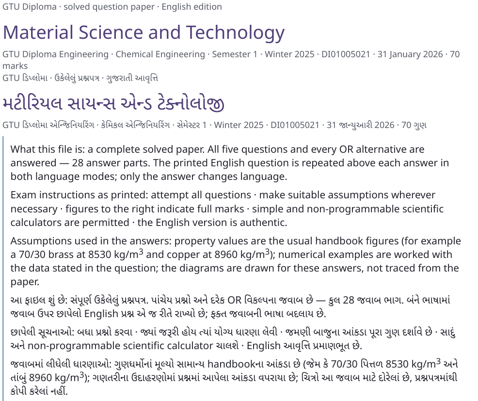
Question 1
Q1 · Plastics, thermal conductivity, soda-lime glass and ceramics
Q.1 (a) · Classify plastic. · 3 marks
A plastic is a high polymer — a long-chain organic material that can be shaped by heat and pressure and then kept in that shape. Plastics are classified mainly by what happens when they are heated again, and secondarily by their source and by their use.
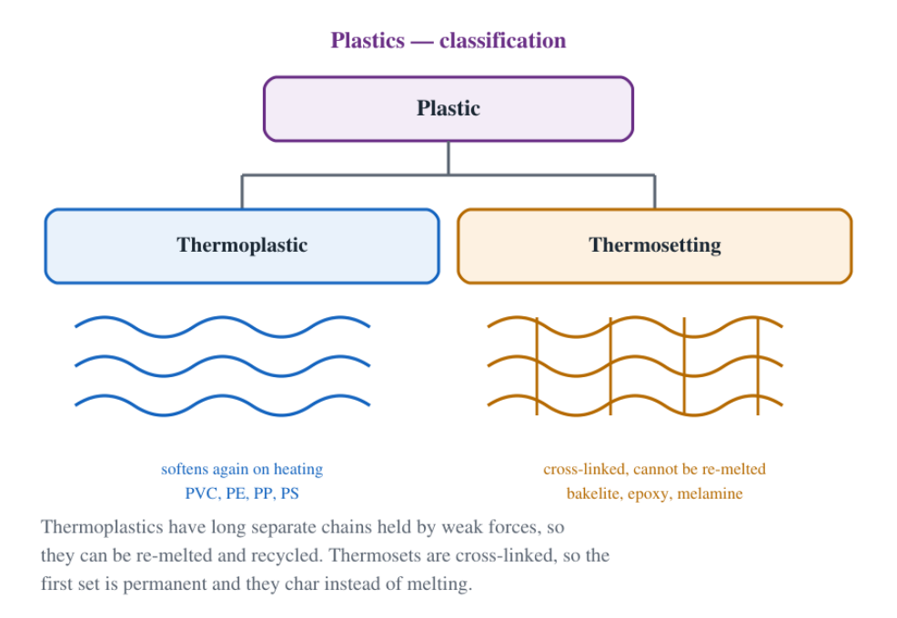
Fig. 1.1 · Classification of plastics — thermoplastic and thermosetting, with the chain structure of each drawn below.
The two main classes
![Q.1 (a): preserved source formula, table or diagram, page 2. Extracted text context (formula notation may be incomplete): Basis Class Behaviour Examples Thermoplastic softens every time it is heated and hardens on cooling; can be re- moulded and recycled polythene (PE), PVC, polypropylene, polystyrene, nylon, acrylic (PMMA) Effect of heat Thermosetting sets once, by a chemical cross- linking reaction; it cannot be softened again, and it chars on strong heating bakelite, epoxy, melamine, urea formaldehyde, polyester resin Effect of heat Source Natural · synthetic natural from plants and animals; synthetic from petroleum chemicals natural: cellulose, casein, shellac / synthetic: PE, PVC, bakelite Use General purpose · engineering general purpose is cheap and common; engineering plastics carry load or heat PE, PP, PVC / nylon, PTFE, polycarbonate, ABS](winter-2025.assets/0002.webp)
Example: a bucket is a thermoplastic (polythene) — it can be melted and re-moulded. A tabletop electrical switch is thermosetting (bakelite) — it must not soften when the switch warms up, and it cannot be re-melted.
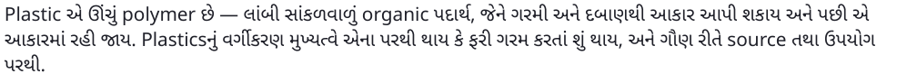
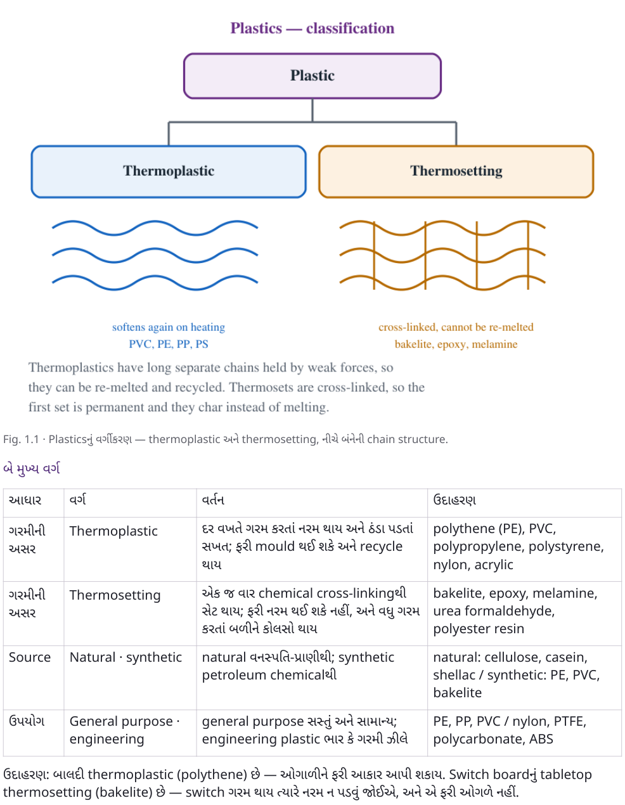
Q.1 (b) · List factors affecting thermal conductivity of insulators. · 4 marks
Thermal conductivity k is the rate at which heat passes through unit thickness of a material for unit area and unit temperature difference, in W/m·K. For an insulator we want k as small as possible, and k depends on the following factors.
The factors
![Q.1 (b): preserved source formula, table or diagram, page 4. Extracted text context (formula notation may be incomplete): Factor How it affects k Why k falls as porosity rises; a foam with 90 % air has k ≈ 0.03 W/m·K still air is a poor conductor (k = 0.026), so trapped air does most of the insulating Porosity and the gas trapped in the pores Moisture content a wet insulator can have two to three times the k of a dry one water has k = 0.6 W/m·K, about 25 times that of air, and it fills the pores Density k falls as density falls, down to an optimum; below that, radiation through the pores raises k again fewer solid paths for heat, but too little solid means the pores are large and radiate Temperature k rises slowly with temperature, and radiation across the pores rises as T4 the gas conducts better when hot and the radiation becomes important above about 200 °C a fine closed-cell structure gives the lowest k fine cells stop convection and radiation; open cells let air circulate Structure: fibrous, cellular or granular k falls when the gas pressure is reduced a vacuum removes gas conduction altogether — vacuum insulation Pressure of the gas in the pores amorphous and complex solids conduct less than simple crystalline ones heat is carried by lattice vibration and free electrons; ordered lattices carry it better Composition and crystal structure k rises as the material settles, cracks or absorbs water the pore structure collapses and moisture gets in Ageing and compaction](winter-2025.assets/0005.webp)
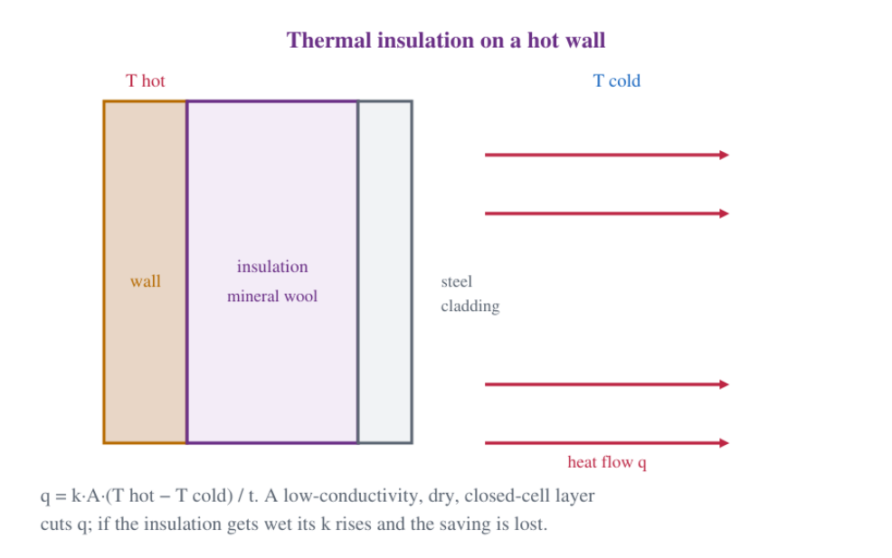
Fig. 1.2 · An insulating layer on a hot wall — the pores hold still air, and heat flow q falls as k falls.
Worked example — the value of dry insulation
A furnace wall is 200 mm of firebrick with k = 1.0 W/m·K. Adding 50 mm of insulation with k = 0.05 W/m·K reduces the heat loss. Compare the heat flow through the two layers if the inner surface is at 900 °C and the outer at 60 °C, per m2.
Given: brick t1 = 0.2 m, k1 = 1.0 W/m·K · insulation t2 = 0.05 m, k2 = 0.05 W/m·K · ΔT = 900 − 60 = 840 K · A = 1 m2
q = 4200 W/m2
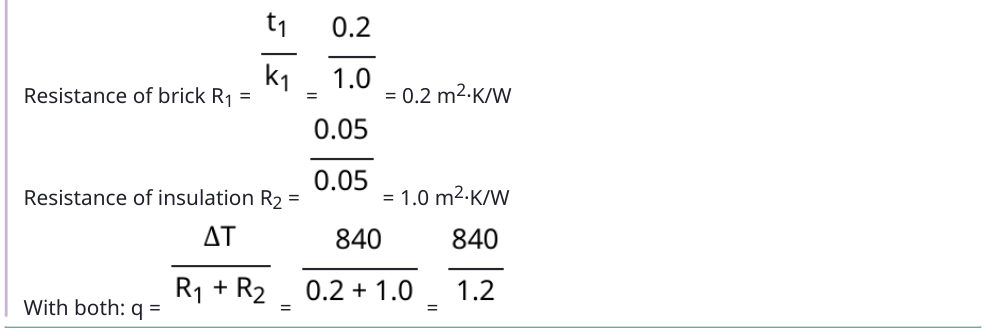
4200 W/m2 without insulation, only 700 W/m2 with it — a saving of 83 %
Sanity check: a 50 mm layer of k = 0.05 has five times the resistance of 200 mm of brick, so the insulation must dominate — and it does: 1.0 against 0.2. This is exactly why a low-k, dry, closed-cell material is chosen.
Limitation
The whole benefit is lost if the insulation gets wet or is compressed: water raises k about twenty-five times, so the surface must be vapour-sealed and the material must be kept dry.
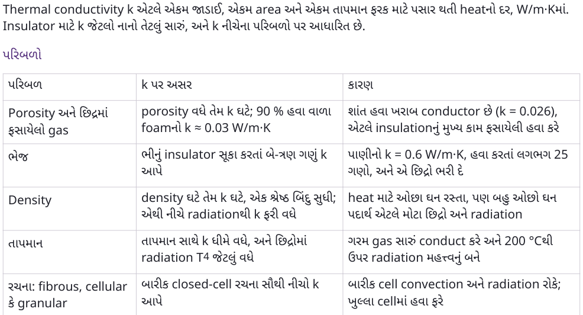
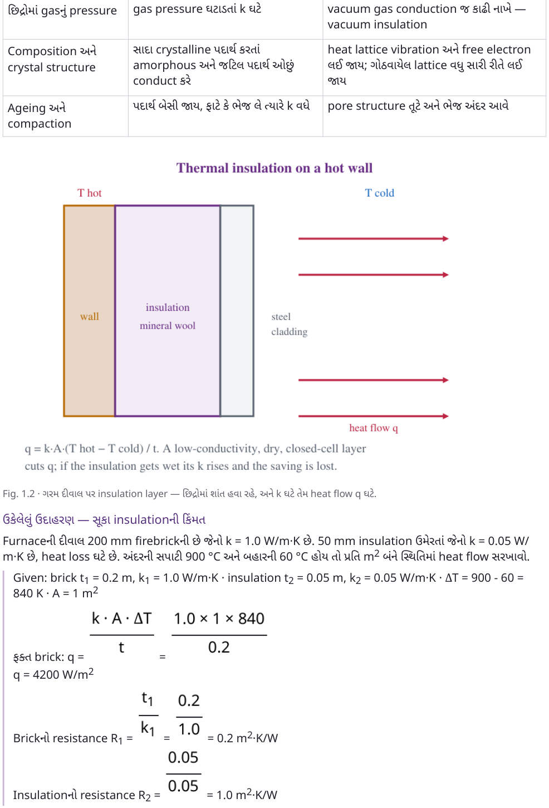
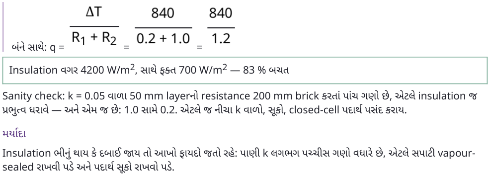
Q.1 (c) · Describe composition, properties and uses of soda lime glass and glass wool. · 7 marks
Soda-lime glass — composition
Soda-lime glass is the commonest glass. It is made by melting a batch of silica with soda and lime: silica forms the network, soda lowers the melting point, and lime gives durability and stops the glass dissolving in water.
![Q.1 (c): preserved source formula, table or diagram, page 7. Extracted text context (formula notation may be incomplete): Ingredient Approximate % Function Silica sand (SiO2) 70–74 the glass former; gives the network and the hardness Soda ash (Na2CO3) 12–16 flux; lowers the melting point from about 1700 °C to 1400 °C, so the batch melts easily Limestone / dolomite (CaCO3, MgCO3) 10–13 stabiliser; makes the glass durable and chemically resistant Alumina (Al2O3) 1–3 improves the resistance to devitrification and the strength Cullet (broken glass) up to 30 reduces the melting energy and speeds up the melt](winter-2025.assets/0012.webp)
Soda-lime glass — properties
• It is transparent, hard and smooth, with a bright finish and good electrical insulation.
• Soft for a glass: it softens at about 700 °C and has a working range that makes it easy to press, blow and draw, which is why it is the cheapest glass.
• Moderate thermal shock resistance, about 60–80 °C — a hot jar put in cold water cracks it, because the coefficient of expansion is fairly high (about 9 × 10−6 per °C).
• Good resistance to water and to most chemicals, but hydrofluoric acid and hot strong alkali attack it.
• Density about 2500 kg/m3, refractive index about 1.52, tensile strength about 40 MPa but compressive strength about 700 MPa.
Soda-lime glass — uses
Form Use
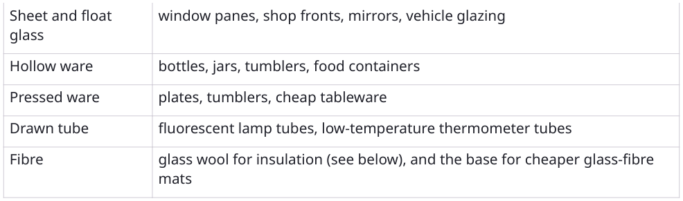
Glass wool — composition and manufacture
Glass wool is a fibrous form of glass, spun from the same soda-lime (or sometimes borosilicate) batch. The molten glass is poured onto a rapidly spinning disc or through a bushing, and the jets of glass are thrown out into fine fibres of 3–10 µm diameter, which are sprayed with a binder and collected as a mat or a blanket.
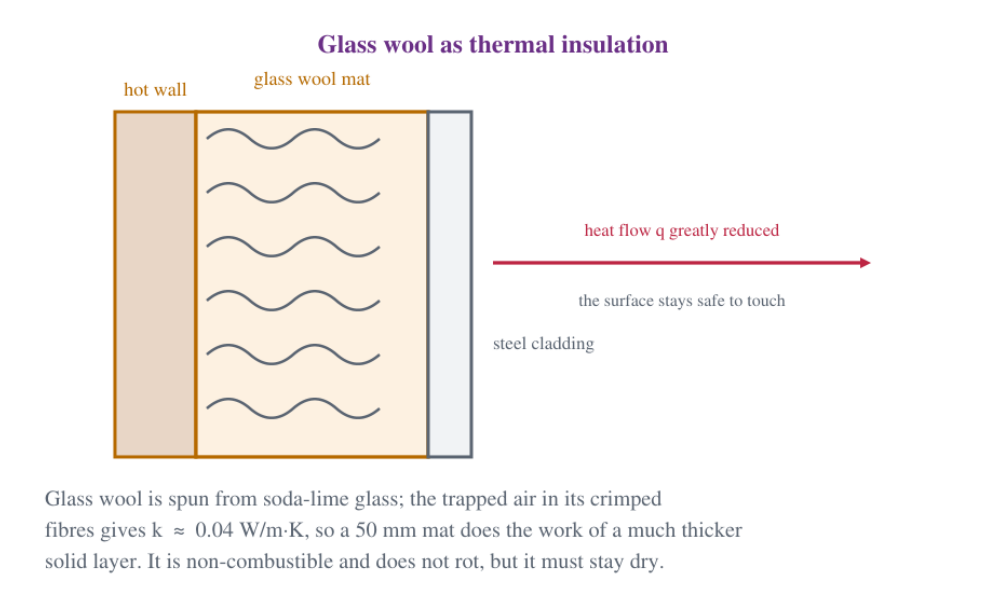
Fig. 1.3 · Glass wool mat on a hot wall — the crimped fibres trap air, which is what insulates.
Glass wool — properties
Property Value / behaviour Why it matters
Thermal conductivity
0.03–0.045 W/m·K the trapped air does the insulating, not the glass
Density 10–100 kg/m3 very light for the volume it fills
Temperature limit up to about 230 °C, and higher for a borosilicate wool
it is for building and pipe insulation, not for a furnace lining
Fire behaviour non-combustible; it does not burn, smoke or drip
a fire-safety advantage over foamed plastic

Glass wool — uses
• Building insulation: loft rolls, wall cavity batts and ceiling insulation.
• Pipe and duct insulation in a plant, often with an aluminium foil facing as the vapour barrier.
• Acoustic lining of partitions, ducts and machine enclosures.
• Fire-stop and fire-resistant packing, and the sound-absorbing lining of a generator room.
Worked example — heat loss through a glass-wool lagging
A steam pipe of 100 mm outside diameter runs at 180 °C. It is lagged with 50 mm of glass wool of k = 0.04 W/m·K, and the outside surface is at 40 °C. Find the heat loss per metre and the saving if the bare pipe (surface coefficient 10 W/m2·K) would lose heat at a much higher rate.
Given: d1 = 0.10 m, d2 = 0.10 + 2 × 0.05 = 0.20 m · k = 0.04 W/m·K · T1 = 180 °C, T2 = 40 °C · L = 1 m
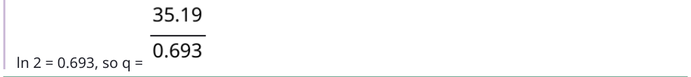
Heat loss ≈ 50.8 W per metre of pipe
Sanity check: 50 W/m is a normal figure for a lagged 100 mm steam line — a bare pipe in still air would lose several hundred W/m, so the lagging is doing its job.
Limitation of soda-lime glass
Soda-lime glass cannot be used where a large temperature difference occurs, as in an oven door or a laboratory flask: it cracks on thermal shock. For that duty a borosilicate glass is used, because the boron oxide in it lowers the expansion coefficient to about a third.
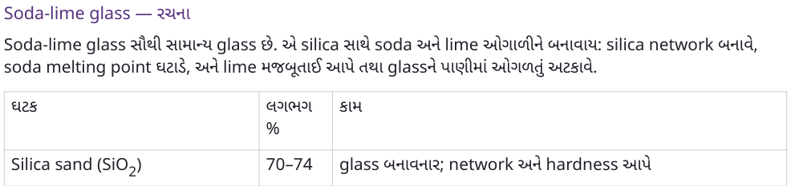
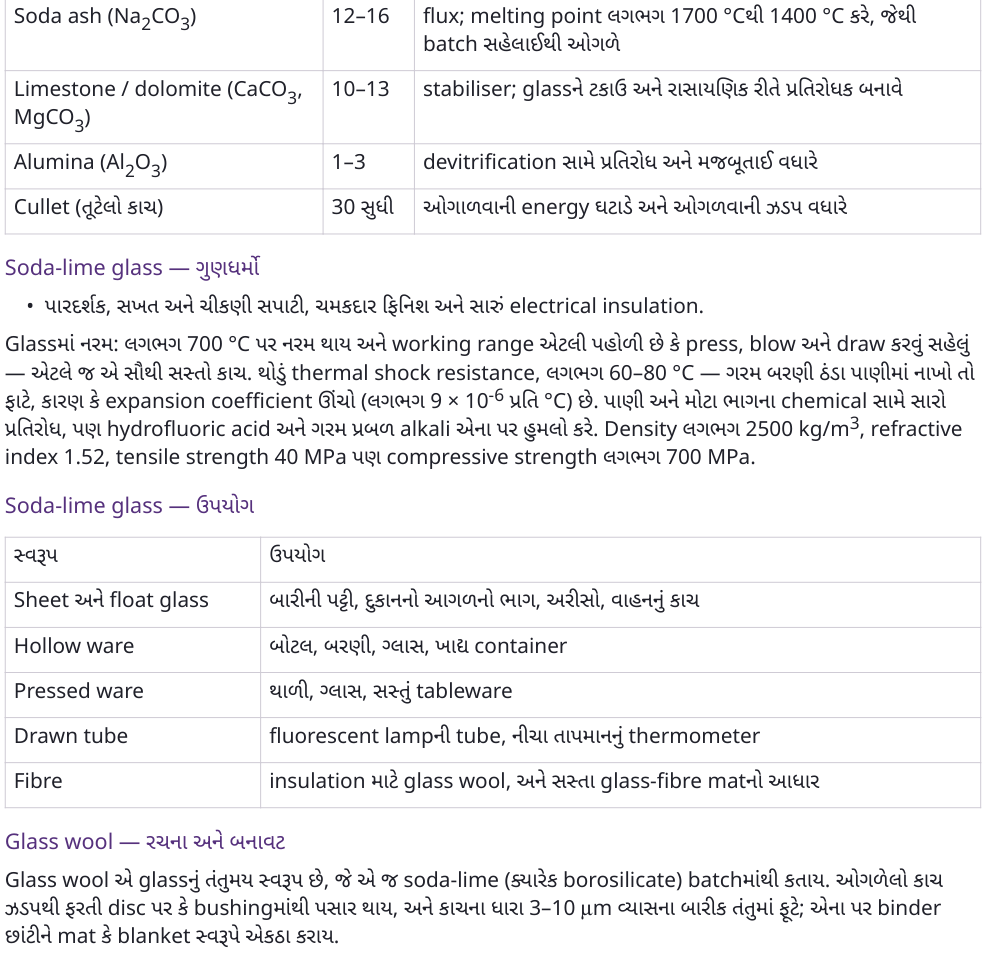
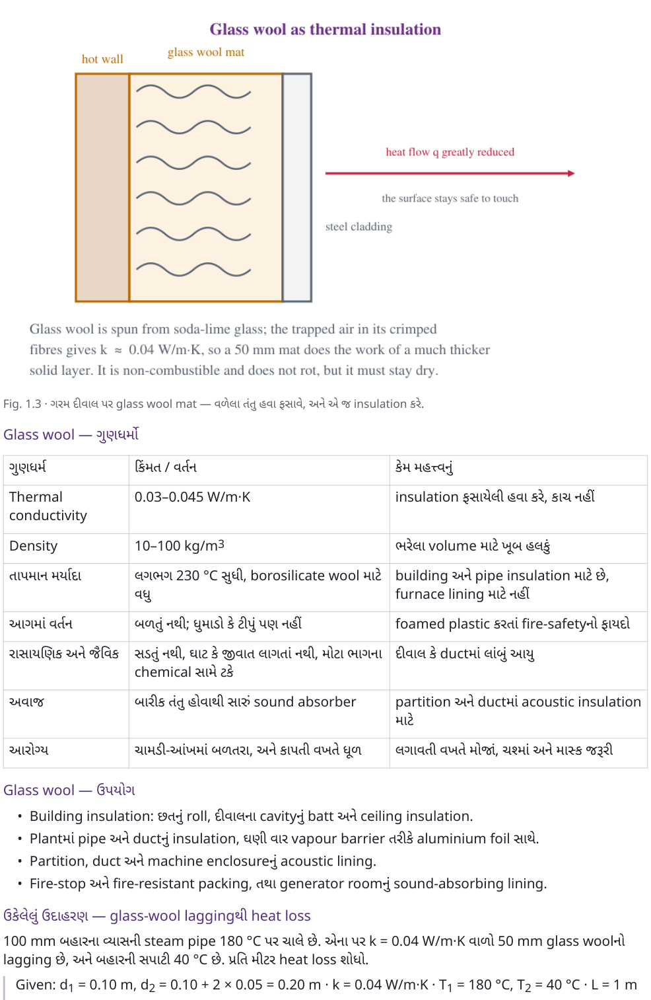
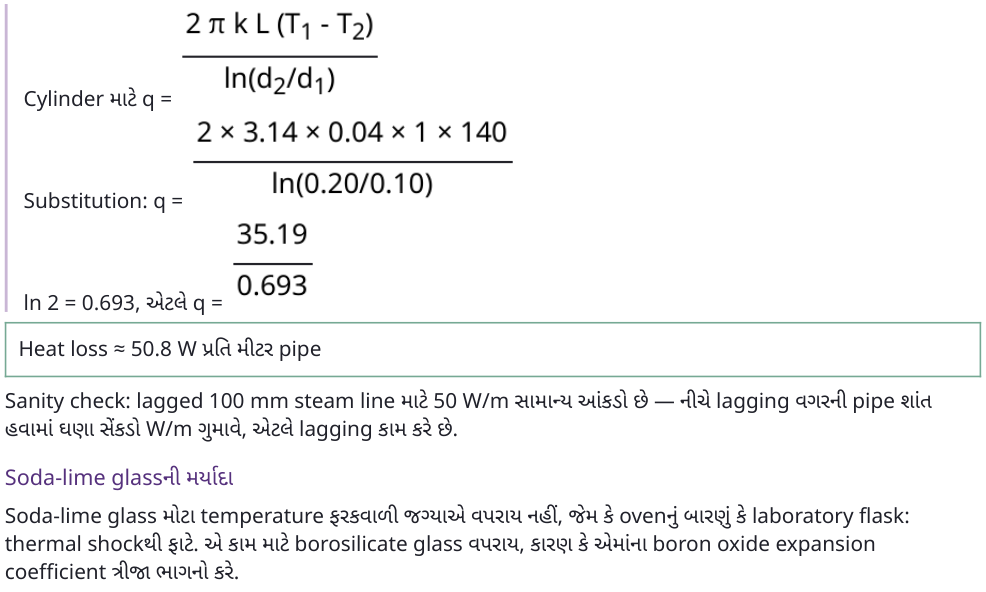
Q.1 (c) · Explain composition, properties and uses of ceramic materials. · OR · 7 marks
What a ceramic is
Ceramic materials are inorganic, non-metallic solids made by shaping a powder or a clay and then firing it at a high temperature. The firing sinters the particles and forms strong ionic and covalent bonds, which is the reason for the whole family of properties: hard, brittle, heat-resistant and electrically insulating.
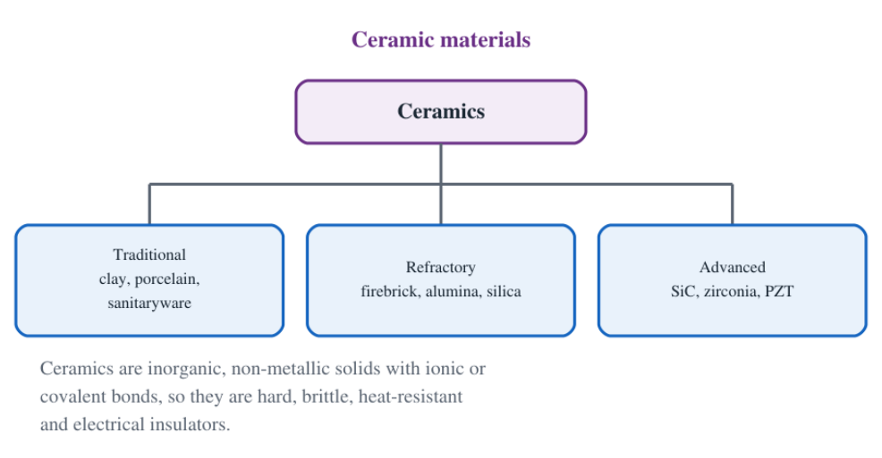
Fig. 1.4 · Ceramic materials — traditional, refractory and advanced, with one example of each.
Composition — by group
![Q.1 (c) OR: preserved source formula, table or diagram, page 13. Extracted text context (formula notation may be incomplete): Group Typical composition Examples Traditional (clay based) clay (Al2O3·2SiO2·2H2O), feldspar as a flux, silica as a filler brick, tile, porcelain, sanitaryware, earthenware Refractory alumina, silica, magnesia, chromite, fireclay, silicon carbide firebrick, silica brick, magnesia brick, crucibles Advanced / technical pure oxides, carbides, nitrides; often with a controlled microstructure alumina (Al2O3), zirconia (ZrO2), silicon carbide (SiC), silicon nitride, PZT tricalcium silicate and dicalcium silicate with gypsum portland cement, concrete, plaster Cement and concrete (chemically bonded)](winter-2025.assets/0024.webp)
Properties
![Q.1 (c) OR: preserved source formula, table or diagram, page 13. Extracted text context (formula notation may be incomplete): Property Behaviour The reason Hardness very high — alumina and SiC are harder than hardened steel strong directional ionic and covalent bonds resist scratching Brittleness very low toughness; it fails without any plastic deformation no free electrons and no slip system, so a crack cannot be blunted Strength in compression high; compressive strength 5–10 times the tensile strength a crack grows only in tension, so a ceramic is used in compression Melting point and hot strength very high — above 1500 °C for most refractories the bonds are strong, so the lattice does not break down until a high temperature Thermal expansion low to moderate; already low for silica and SiC few and stiff bonds, so the lattice does not expand much Thermal conductivity low for a porous firebrick, high for a dense SiC pores insulate; a dense covalent crystal conducts by lattice vibration Electrical behaviour insulators, and some are semiconductors or ionic conductors no free electrons — the valence electrons are locked in the bonds Chemical resistance excellent against acids and to oxidation at high temperature; attacked by HF and hot alkali the oxide surface is already the stable phase density 2000–4000 kg/m3; porosity from 0 % (dense) to 70 % (insulating brick) Density and porosity the firing temperature and the pore former set the porosity](winter-2025.assets/0025.webp)
Uses
Application Ceramic used Why this ceramic
Furnace lining, kiln brick
fireclay, silica and high-alumina brick
refractory and a low thermal conductivity when porous
Electrical insulators, spark plugs
porcelain, steatite, alumina high resistivity and it does not track
![Q.1 (c) OR: preserved source formula, table or diagram, page 14. Extracted text context (formula notation may be incomplete): Cutting tools and abrasives alumina, SiC, cubic boron nitride hardness close to diamond Tiles, sanitaryware, tableware clay-based whiteware, glazed cheap, hard, and easy to clean Chemical plant alumina, SiC, glass-lined and acid-proof brick resistance to acid and to a high temperature Sensors and electronics PZT (piezoelectric), zirconia (oxygen sensor), ferrites the electrical and magnetic property is designed into the ceramic Bio-medical alumina and zirconia inert in the body and wear resistant](winter-2025.assets/0026.webp)
Worked example — a refractory wall must be thick enough
A furnace wall of firebrick of k = 1.2 W/m·K must keep its outside surface below 80 °C when the inside is at 1100 °C and the outside air takes heat at h = 10 W/m2·K. Find the minimum wall thickness.
Given: k = 1.2 W/m·K · Ti = 1100 °C · To = 80 °C · Tair = 30 °C · h = 10 W/m2·K
Heat leaving the outer surface = h (To − Tair) = 10 × (80 − 30)
q = 500 W/m2
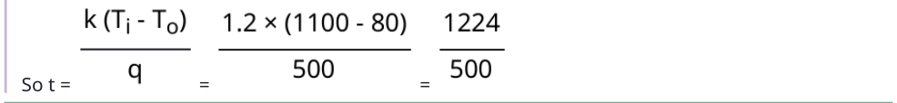
Minimum thickness ≈ 2.45 m — which is why a real furnace wall is built of a thin hot-face brick backed by a thick porous insulating brick
Sanity check: 2.45 m of dense firebrick is absurd, so the answer shows that a single material cannot do the job; a composite wall of 230 mm firebrick plus 230 mm insulating brick is the practical answer, and this is the design lesson of the calculation.
Limitations
• Ceramics are brittle: they give no warning before they break, and they cannot be welded or repaired, so a crack means a replacement.
• They are difficult to shape and to machine after firing, and firing shrinkage must be allowed for in the mould.
• They have poor thermal shock resistance unless the expansion is low, and they are weak in tension, so a ceramic part must be loaded in compression.
• Porosity makes a ceramic absorb water, which ruins both the insulation and the strength — hence the glaze on a tile or a sanitaryware piece.
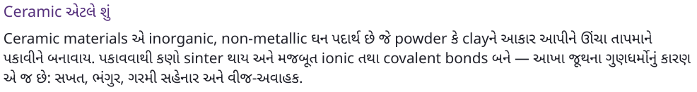
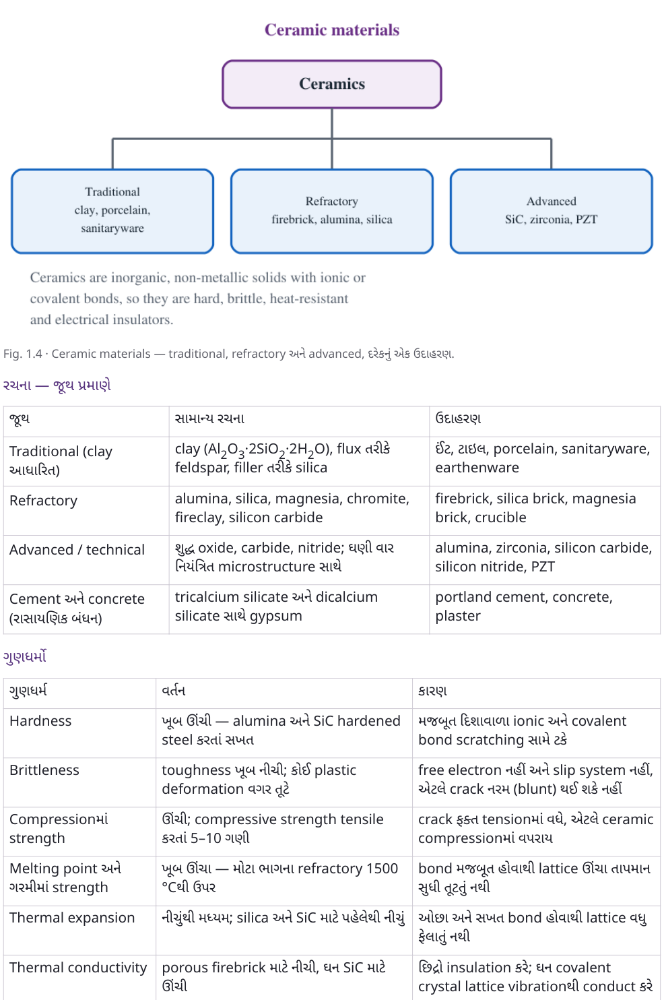
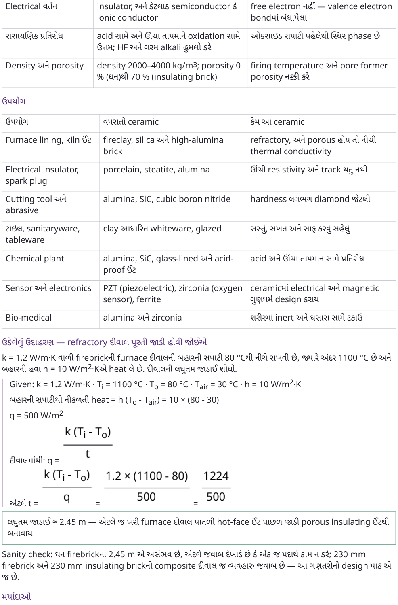
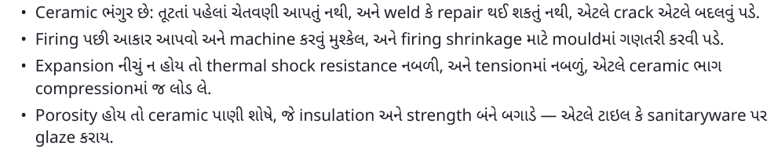
Question 2
Q2 · Melting and boiling point, scope, rubber and fibre, stress and creep, varnishes
Q.2 (a) · Define melting point and boiling point. · 3 marks
Melting point is the temperature at which a solid changes to a liquid at a given pressure — strictly, the temperature at which the solid and the liquid phases are in equilibrium. For a pure crystalline solid the change happens at a single sharp temperature, and that temperature is a fingerprint of the substance.
Boiling point is the temperature at which the vapour pressure of a liquid equals the pressure on it, so that bubbles of vapour can form inside the liquid and it boils throughout. It is quoted at the standard pressure of 1 atm (101.325 kPa) and is then called the normal boiling point.
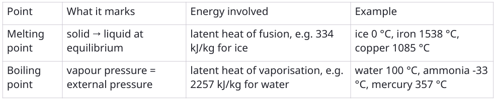
Why an engineer cares: the melting point sets the working temperature of a material — a solder must melt below 250 °C while a furnace brick must not soften at 1400 °C; the boiling point sets the temperature at which a refrigerant evaporates or a coolant boils, which is the basis of a whole refrigeration or heat-transfer design.
Note on pressure: the boiling point falls as the pressure falls — water boils at about 45 °C on a mountain at 0.1 bar — which is why an evaporator works under vacuum, while a pressure cooker raises the boiling point to about 120 °C.
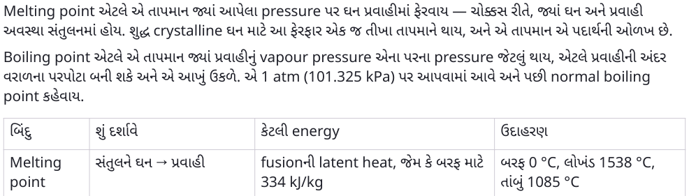
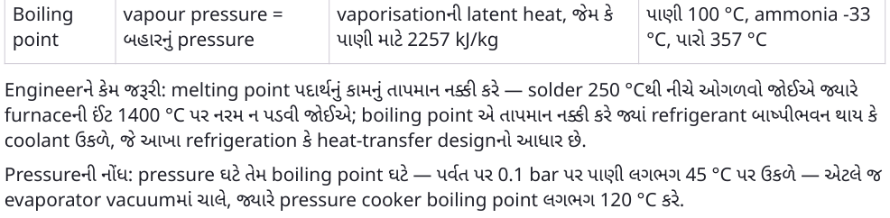
Q.2 (b) · Explain scope of material science. · 4 marks
Material science is the study of the structure of materials and of how that structure controls their properties, so that a material can be selected, improved or designed for a given job. Its scope runs from the atom to the plant.
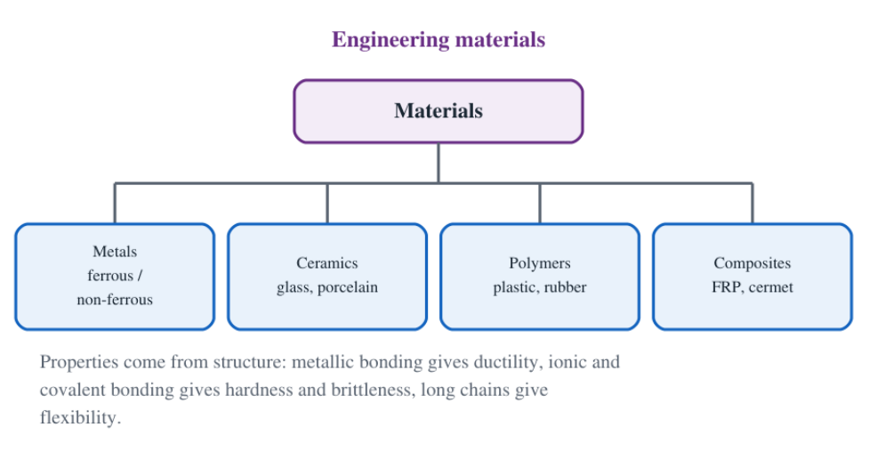
Fig. 2.1 · The four families of engineering materials — metals, ceramics, polymers and composites — all studied within material science.
The scope, area by area
Area What is studied Where it is used
atomic bonding, crystal structure, grains, phases, defects
explains why copper is ductile and glass is brittle
Structure and bonding
mechanical, thermal, electrical, magnetic, chemical properties and the tests that measure them
decides the safe working stress of a part
Properties and testing
comparing candidates on strength, cost, corrosion, availability
picking a material for a pump body or a pipe
Selection of materials
casting, rolling, forging, welding, sintering, moulding
a forged shaft is stronger than a cast one of the same steel
Processing and forming
![Q.2 (b): preserved source formula, table or diagram, page 19. Extracted text context (formula notation may be incomplete): annealing, hardening, tempering, alloying a cutting tool is hardened and tempered to the right hardness Heat treatment and improvement rusting, oxidation, stress corrosion, polymer ageing the reason a pipe is lined, coated or made of stainless steel Corrosion and degradation Failure analysis fatigue, creep, fracture, wear finding out why a shaft broke and preventing a repeat New materials composites, nano-materials, smart materials, bio-materials a lighter FRP tank, a zirconia oxygen sensor cost per unit of property, recyclability, energy of production choosing a material that is cheap and can be recycled Economics and ecology](winter-2025.assets/0037.webp)
Worked example — why selection matters
A tie rod must carry 60 kN in tension. Compare the mass of a steel rod (σy = 250 MPa, ρ = 7850 kg/ m3) with an aluminium rod (σy = 150 MPa, ρ = 2700 kg/m3) if the rod is 2 m long and the design stress is half the yield stress.
Given: F = 60 × 103 N · L = 2 m · steel σ = 125 MPa, ρ = 7850 · aluminium σ = 75 MPa, ρ = 2700
Mass of steel = A · L · ρ = 4.8 × 10−4 × 2 × 7850 = 7.54 kg
Mass of aluminium = 8.0 × 10−4 × 2 × 2700 = 4.32 kg
Steel rod 7.5 kg, aluminium rod 4.3 kg — the aluminium rod is 43 % lighter
Sanity check: the aluminium needs twice the area but has a third of the density, so the mass is smaller — which is the whole reason for using aluminium in an aircraft. The engineer reads this as the property index σ/ρ, and material science is what supplies that number.
Limitation of the scope
Material science gives the property data and the mechanism, but the final choice is also limited by cost, availability, weldability, and the code of the plant — a material with the best property index may still be rejected because it cannot be welded on site.
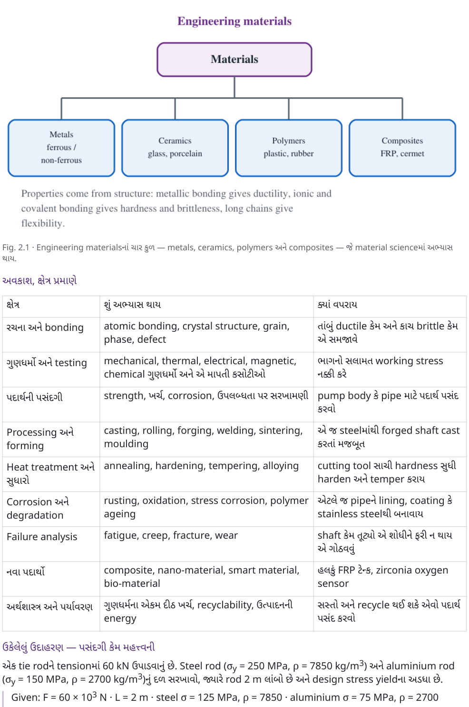
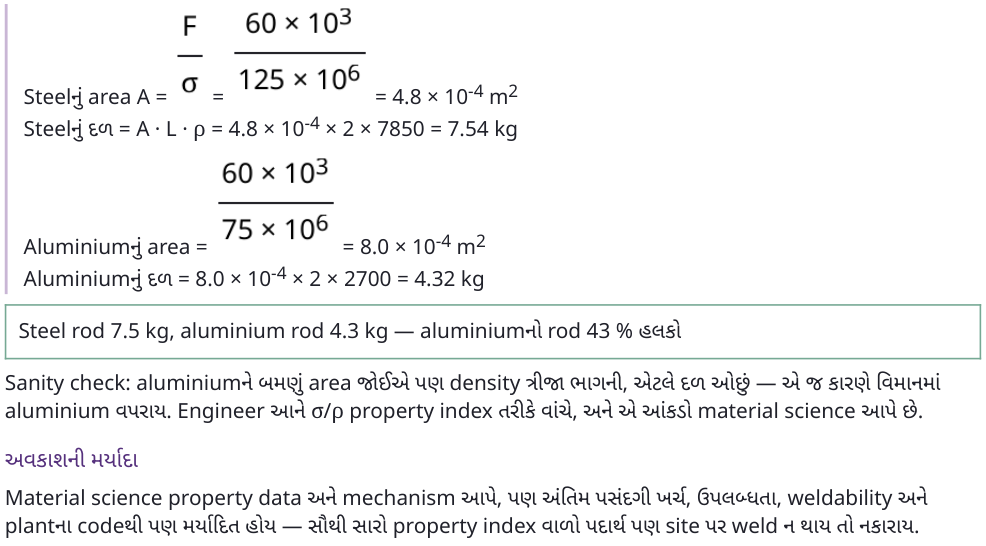
Q.2 (c) · Describe properties and uses of rubber and fiber. · 7 marks
Rubber
Rubber is an elastomer: a polymer that can be stretched to several times its length and returns to the original shape when the load is removed. Natural rubber is cis-polyisoprene from the latex of the rubber tree; synthetic rubbers such as SBR, nitrile, neoprene and silicone are made from petroleum. In use the rubber is vulcanised — heated with sulphur — so that the chains are cross- linked into a network.
Properties of rubber
Property Behaviour Consequence in use
Elasticity it stretches 500–700 % and recovers fully a gasket follows the movement of a joint, a tyre follows the road
it absorbs energy and damps vibration engine mounts, anti-vibration pads, shock absorbers
Toughness and damping
good, especially for the vulcanised and carbon-black filled grades
tyre tread, conveyor belt, hose cover
Abrasion resistance
Impermeability very low permeability to air and water inner tube, diaphragm, balloon, waterproof cloth
high resistivity cable insulation, gloves, mats
Electrical insulation
natural rubber swells in oil and petrol; nitrile resists oil, neoprene resists weathering, silicone resists heat
the grade must be matched to the fluid
Chemical resistance
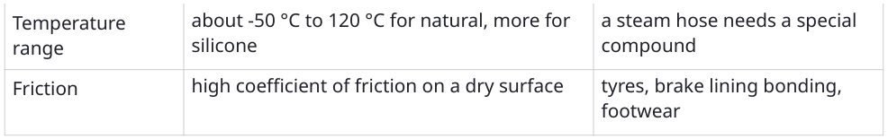
Uses of rubber
• Tyres and tubes — the largest single use, with carbon black and sulphur.
• Hoses, belts and conveyor belting for water, air, slurry and power transmission.
• Gaskets, O-rings, seals and diaphragms — the standard way of sealing a joint in a chemical plant; the grade is chosen for the fluid.
• Insulation and protective goods: cable sheathing, gloves, mats, aprons, footwear.
• Vibration and sound control: engine mounts, bridge bearings, rail pads, rubber tiles.
• Domestic and medical: hot-water bottle, eraser, teats, surgical gloves.
Fibre
A fibre is a long, thin, flexible thread with a length at least a hundred times its diameter, used as a textile or as reinforcement. Fibres are natural (cotton, jute, wool, silk, asbestos) or synthetic (nylon, polyester, acrylic, rayon, glass, carbon, aramid).

Fig. 2.2 · Classification of fibres — natural and synthetic, with two common examples of each.
Properties of fibre
![Q.2 (c): preserved source formula, table or diagram, page 22. Extracted text context (formula notation may be incomplete): Property Meaning Example the strength per unit of mass, the key property for a fibre nylon and aramid are far stronger than cotton for the same mass Tenacity (specific strength) a fine fibre bends easily without breaking cotton and wool are fine and soft; glass fibre is fine but brittle Finenss and flexibility how well the fibre returns after stretching wool and nylon recover well, cotton wrinkles Elasticity and recovery](winter-2025.assets/0045.webp)
![Q.2 (c): preserved source formula, table or diagram, page 23. Extracted text context (formula notation may be incomplete): cotton absorbs 8 %, polyester almost nothing a cotton shirt is comfortable in summer; polyester dries fast Moisture absorption most synthetics melt; aramids and glass do not burn easily a glass-fibre mat is used where a synthetic would melt Thermal behaviour polyester and glass resist acids; nylon is attacked by strong acid a chemical filter cloth is chosen by the fluid Chemical resistance some fibres are insulators, and an optical fibre carries light optical fibre in communication Electrical and optical](winter-2025.assets/0046.webp)
Uses of fibre
• Clothing and household textiles — cotton, wool, silk, polyester, and their blends.
• Industrial textiles: conveyor belt fabric, filter cloth, tyre cord, rope, tarpaulin, geotextile.
• Reinforcement: glass fibre in FRP tanks and pipes, carbon fibre in aircraft and sports goods, aramid in bullet-proof vests.
• Insulation and fire protection: glass wool, asbestos (now restricted), aramid fire clothing.
• Communication: optical fibre in place of copper cable.
Worked example — a fibre rope against a steel wire
A rope must carry 10 kN. Compare the mass per metre of a nylon rope (σ = 80 MPa, ρ = 1140 kg/m3) with a steel wire (σ = 400 MPa, ρ = 7850 kg/m3), both at a factor of safety of 2.
Given: F = 10 × 103 N · nylon σ = 40 MPa, ρ = 1140 · steel σ = 200 MPa, ρ = 7850 · L = 1 m
Nylon 0.285 kg/m against steel 0.393 kg/m — the fibre rope is about 27 % lighter
Sanity check: steel is five times stronger per unit area but nearly seven times denser, so the fibre wins on mass; this is why a climbing rope and a mooring line are fibre.
Limitations
• Rubber swells in the wrong fluid and degrades in ozone and sunlight unless it is protected; it also creeps under a steady load and it is flammable.
• A fibre loses strength when wet (cotton, aramid), creeps under a steady load (nylon), and melts or burns (polyester, nylon) — the reason a glass or aramid fibre is used near heat.
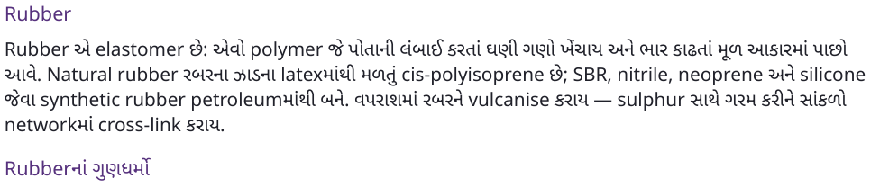
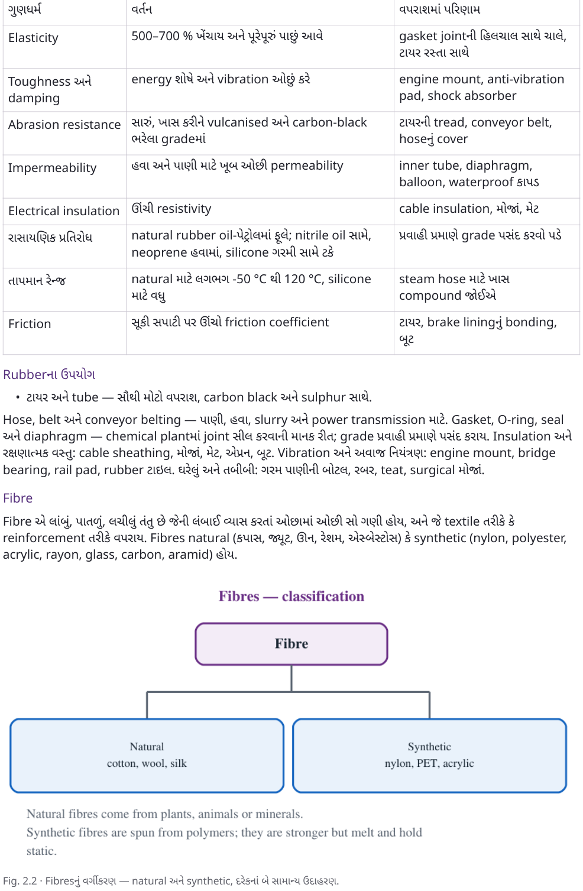
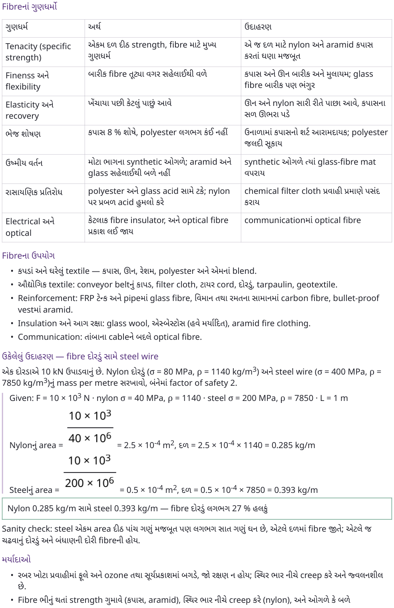
Q.2 (a) · Define stress and creep. · OR · 3 marks
Stress is the internal resisting force set up in a material per unit area of its cross section, when it is subjected to an external load. It is measured in N/m2 or Pa, and in practice in MPa.
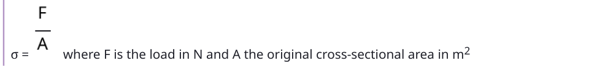
The strain that goes with it is the change in length per unit original length, ε = ΔL / L, and it is dimensionless. Three forms are used in design: tensile stress (pulling), compressive stress (pushing) and shear stress (sliding).
Creep is the slow, permanent deformation of a material under a constant load held for a long time, usually at a high temperature. It is a time-dependent deformation, so a part that is safe when the load is first applied can still fail months later by creep.
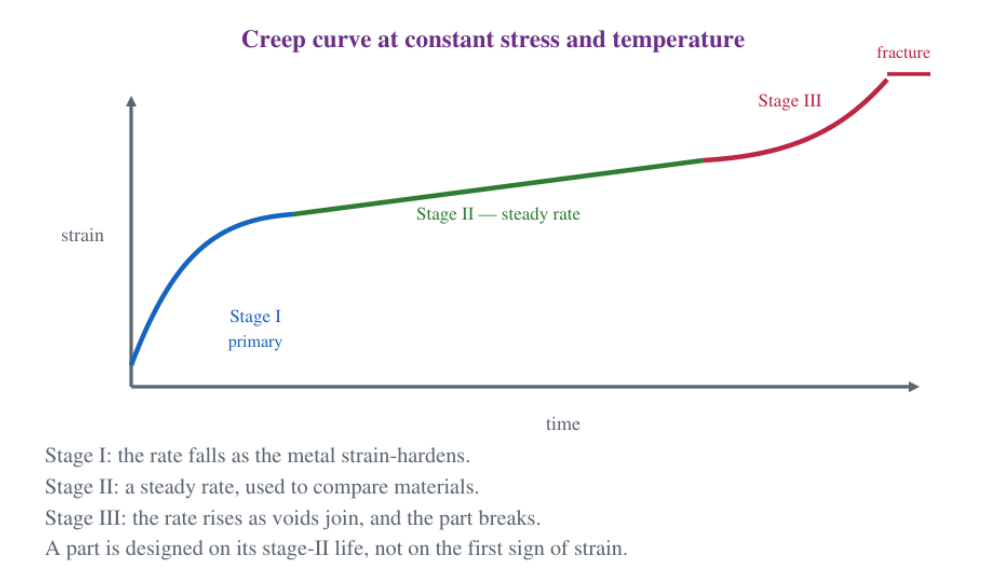
Fig. 2.3 · Creep curve — primary, secondary and tertiary stages, ending in fracture.
The three stages of creep
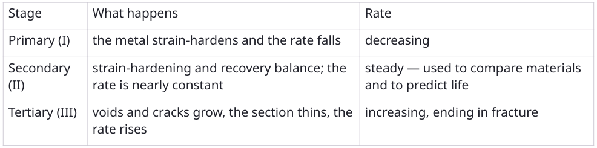
Worked example — stress in a tie rod
A tie rod of 20 mm diameter carries a load of 50 kN. Find the stress, and state whether a steel of yield strength 250 MPa is safe with a factor of safety of 2.
Given: d = 20 mm = 0.02 m · F = 50 × 103 N · σy = 250 MPa · FOS = 2
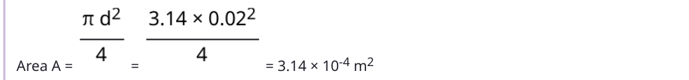
σ = 159 MPa, which is above the allowable 125 MPa — so the rod is not safe; a larger diameter is needed
Sanity check: 159/250 gives a factor of safety of only 1.57 against yield, below the required 2, so the answer is consistent. A 25 mm rod would give about 102 MPa and would pass.
Where creep matters
Creep governs the design of steam turbine blades and pipes, boiler tubes, furnace parts and nuclear components — the creep strength is the stress that produces a stated small strain (say 0.1 %) in 100 000 hours at a given temperature, and it is the number a high-temperature designer uses.
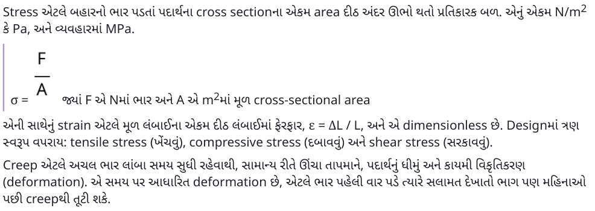
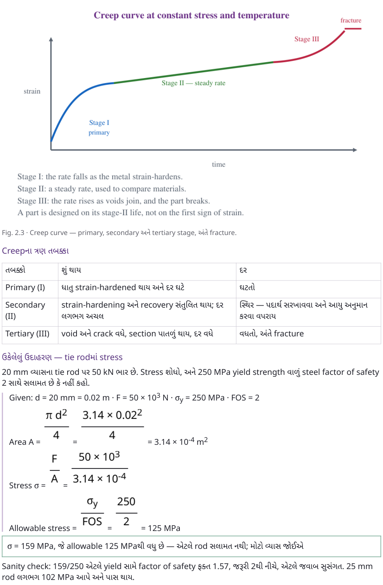
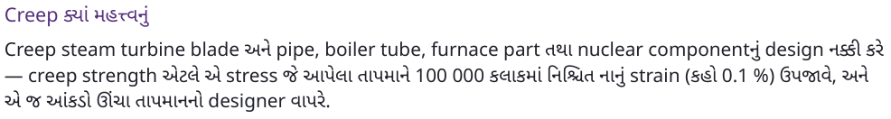
Q.2 (b) · Explain factors affecting material properties. · OR · 4 marks
The properties of a material are not fixed numbers: they are the result of its internal structure. Anything that changes that structure changes the properties, and that is why the same steel can be soft or hard, and the same plastic flexible or brittle.
The factors
Factor Effect on properties Example
a small addition changes strength, hardness and corrosion resistance
0.8 % C makes steel hard; 18 % Cr and 8 % Ni make it stainless
Composition and alloying elements
the same metal in a different crystal form has different properties
iron is BCC ferrite at room temperature and FCC austenite above 910 °C, and it is far more ductile as austenite
Crystal structure and phase
the Hall–Petch relation: σy rises as the grain size falls
Grain size a finer grain gives higher yield strength and better toughness
Heat treatment controls the phases, the grain size and the residual stress
quenching and tempering a tool steel; annealing softens it for machining
raises strength and hardness, lowers ductility
a wire drawn thin is strong but cannot be bent further without cracking
Cold work (strain hardening)
dislocations and boundaries strengthen; vacancies aid diffusion
a perfect crystal is actually weak
Defects: vacancies, dislocations, grain boundaries
porosity lowers strength, toughness and conductivity; inclusions start cracks
a casting with gas porosity fails early in fatigue
Porosity and impurities
water lowers the strength of a polymer and the insulation of a ceramic; corrosion reduces the section
wet glass wool loses its insulation value
Moisture and environment
Temperature strength falls and ductility generally rises with temperature; above about 0.4 Tm creep appears
a steel that is tough at 20 °C creeps at 550 °C
a fast load gives a brittle response, a slow load a ductile one; a long load gives creep
a plastic part breaks suddenly under impact
Rate of loading and time
a rough surface and a sharp corner raise the local stress and start a fatigue crack
a polished shaft outlasts a rough one
Specimen size and shape, surface finish
Worked example — the effect of grain size
The Hall–Petch constants for a low-carbon steel are σ0 = 120 MPa and k = 0.74 MPa·m1/2. Find the yield strength for a grain size of 0.05 mm and of 0.01 mm, and state the effect.
Given: σ0 = 120 MPa · k = 0.74 MPa·m1/2 · d1 = 0.05 mm = 5 × 10−5 m · d2 = 0.01 mm = 1 × 10−5 m
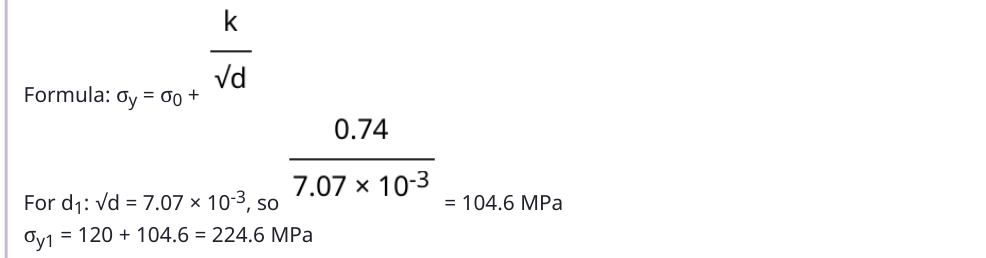
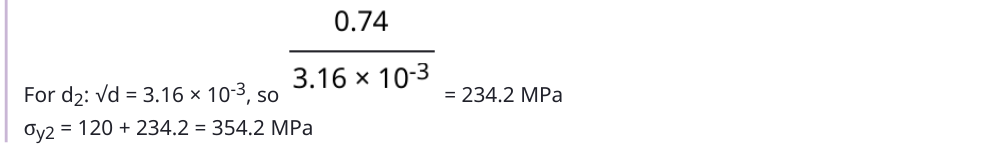
224.6 MPa at 0.05 mm against 354.2 MPa at 0.01 mm — a five-fold finer grain gives about 58 % more yield strength
Sanity check: k/√d rises as √5 = 2.24 when d falls five times, and 104.6 × 2.24 = 234, exactly the second value — the arithmetic is consistent, and the lesson is that grain refinement is a free strengthening method.
Limitations
Grain refinement helps only down to a limit, after which the material becomes unstable at high temperature; and every strengthening method costs something — a stronger steel is less weldable, a harder surface is more brittle, and a finer grain is lost if the weld or the heat-affected zone grows the grains again.
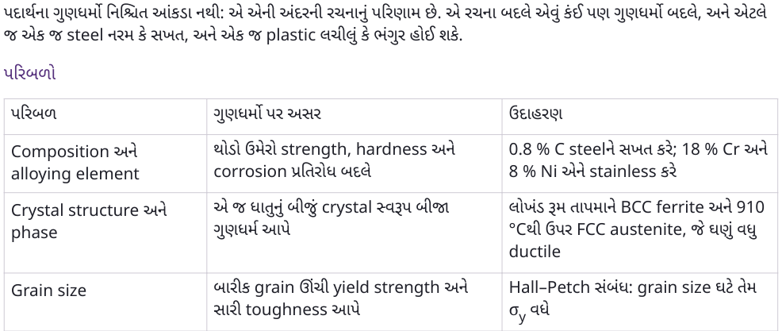
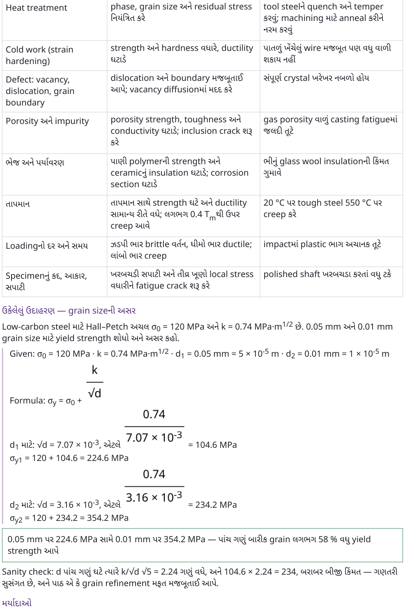
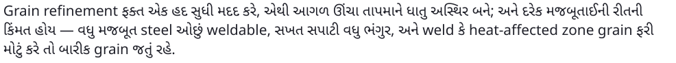
Q.2 (c) · Explain properties, ingredients and uses of varnishes. · OR · 7 marks
Definition
A varnish is a clear, transparent coating — a solution of a resin or a drying oil in a solvent — which dries to a hard, glossy, protective film on wood or metal. Unlike a paint it has no pigment, so the grain or the surface below shows through; its job is protection and finish, not colour or hiding.
Ingredients
Ingredient Function Typical material If it is missing or wrong
Resin (film former)
forms the hard, glossy film and gives the resistance
shellac, copal, rosin, alkyd, polyurethane, phenolic
too little resin gives a soft film
Oil (in an oil varnish)
makes the film flexible and lets it flow out
linseed oil, tung oil, dehydrated castor oil
too much oil gives a slow-drying, soft film
dissolves the resin so it can be brushed, then evaporates
turpentine, white spirit, naphtha, alcohol, water
the wrong solvent makes the film blush or dry too fast
Solvent / thinner
accelerates the oxidation and drying of the oil
lead, cobalt, manganese and zirconium naphthenates (0.02–0.5 %)
too much drier makes the film brittle and wrinkled
Drier (siccative)
improve flow, UV resistance, matting or anti-skinning
plasticiser, UV absorber, matting agent
no UV absorber means early yellowing
Additives (optional)
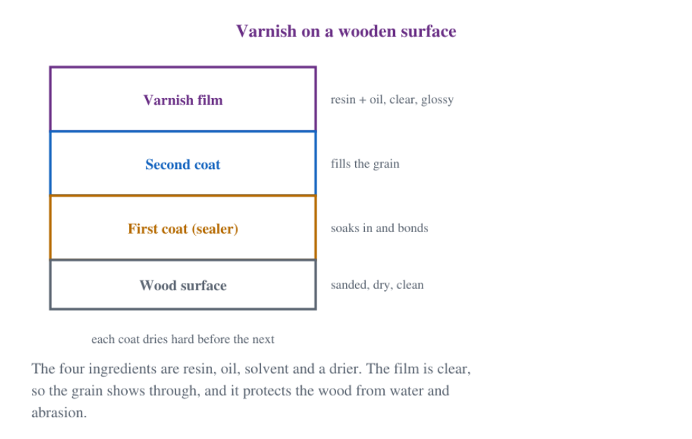
Fig. 2.4 · A three-coat varnish system — the sealer bonds to the wood, the second coat fills the grain, the top coat gives gloss.
Properties of a good varnish film
![Q.2 (c) OR: preserved source formula, table or diagram, page 33. Extracted text context (formula notation may be incomplete): Property Why it matters Transparency and gloss the wood grain must show; the gloss is the finish the customer sees Adhesion the film must grip the wood and not lift at an edge Hardness with flexibility hard enough to resist a scratch, flexible enough to follow the movement of the wood without cracking the film must keep moisture out, or the wood swells and the film blisters Water and water-vapour resistance Chemical resistance resistance to alcohol, alkali and household chemicals — this is where a polyurethane beats a shellac Weather and UV resistance an exterior varnish needs a UV absorber or it fails by chalking and peeling sets the production rate and the number of coats per day Drying time and re-coat time essential for furniture and for a food area Non-toxic, low odour when dry](winter-2025.assets/0068.webp)
Types
• Oil varnish — resin plus a drying oil; long-oil is flexible (exterior), short-oil is hard (interior).
• Spirit varnish (French polish) — shellac in alcohol; dries fast, is soft, and whitens with water.
• Spar / exterior varnish — phenolic or alkyd with tung oil, plus UV absorbers, for boats and doors.
• Polyurethane varnish — hard, tough and chemical resistant; the standard for floors and furniture.
• Alkyd and acrylic water-borne varnish — a low-odour, low-solvent option.
• Lacquer and insulating varnish — nitrocellulose for a fast finish, and a baking varnish for motor windings and transformer cores.
Uses
![Q.2 (c) OR: preserved source formula, table or diagram, page 34. Extracted text context (formula notation may be incomplete): Application Why a varnish Furniture, doors, panelling protects the wood and shows the grain Wooden floors a hard polyurethane film resists wear and is easy to re-coat Boats and exterior wood spar varnish with UV absorbers keeps out water Electrical insulation insulating varnish impregnates a winding and keeps out moisture Metal protection a clear varnish on brass or copper keeps the polish without hiding it Printing and paper a varnish overprint gives gloss and scuff resistance](winter-2025.assets/0069.webp)
Working — application step and reason
1. Step 1 — Sand the surface and remove all dust. Reason: a varnish film is transparent, so every scratch and every speck of dust stays visible, and the film cannot grip a loose surface.
2. Step 2 — Apply a thinned sealer coat and let it soak in. Reason: the first coat must penetrate the open grain and bond to the wood, and a thinned coat penetrates better.
3. Step 3 — Sand lightly between coats and wipe off the dust. Reason: the flattening gives the next coat a key, and without it the coats do not bond.
4. Step 4 — Brush on two or three full coats, each thin. Reason: a thin coat dries evenly and does not wrinkle; a thick coat skins over and stays soft underneath.
5. Step 5 — Let the last coat harden fully before use. Reason: the film is still soft while the solvent leaves, and handling it early leaves marks that cannot be repaired locally.
Worked example — coverage of a varnish
A tin holds 4 litres of varnish. One coat gives a wet film of 100 µm, and the varnish has 45 % solids by volume. Find the dry film thickness per coat and the area one tin covers for two coats, allowing 10 % loss.
Given: volume = 4 L = 4 × 10−3 m3 · wet film = 100 µm = 1 × 10−4 m · solids = 0.45 · coats = 2 · loss = 10 %
Dry film per coat = 100 × 0.45 = 45 µm
Useful volume = 4 × 0.90 = 3.6 L = 3.6 × 10−3 m3
Dry film 45 µm per coat; one tin covers about 18 m2 with two coats
Sanity check: 18 m2 from 4 L is 4.5 m2 per litre for two coats, which is the normal coverage quoted on a varnish tin — the answer is consistent.
Limitations
• A varnish film is thin, so it cannot hide a defect and it wears through at a corner; it needs re-
coating every two to five years outdoors.
• An oil varnish dries slowly and yellows; a shellac film is soft and whitens with water.
• Solvent-borne varnishes release VOCs and are flammable, and they need good ventilation.
• The film is only as good as the surface under it — moisture in the wood blisters it, and a dirty surface makes it peel.
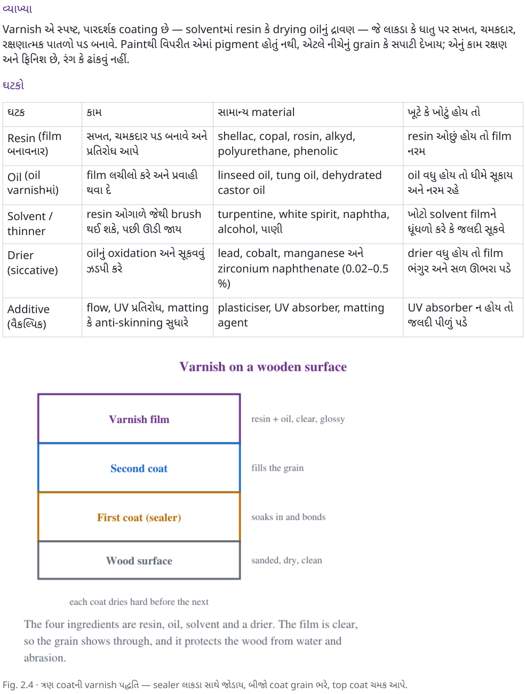
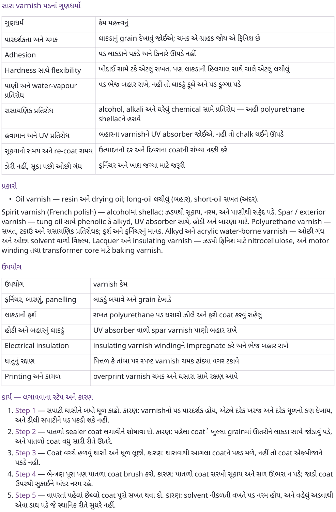
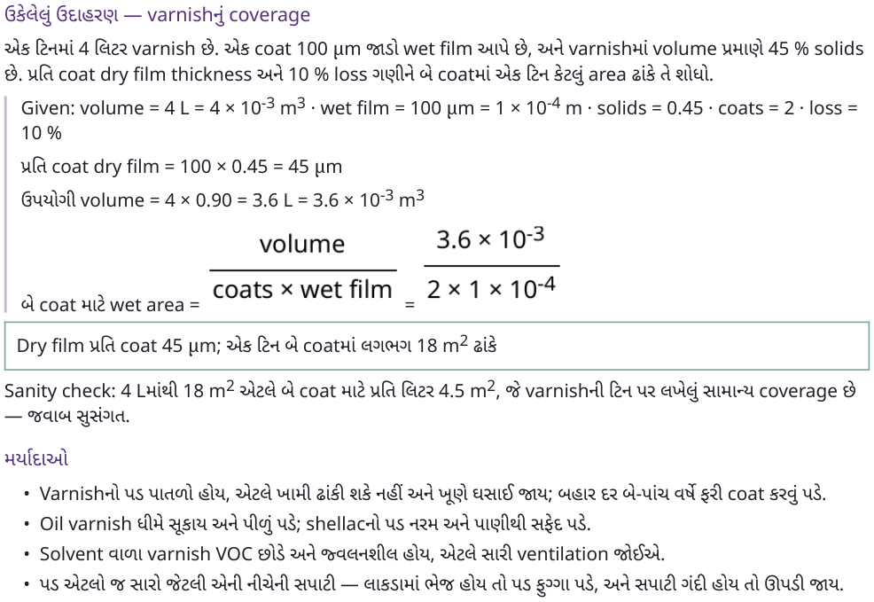
Question 3
Q3 · Ferrous metals, solid state, crystal lattices, cast iron and electrical properties
Q.3 (a) · Define ferrous and nonferrous metal. · 3 marks
Ferrous metals are those whose main constituent is iron. They are magnetic, strong and cheap, and they are the backbone of engineering — but they rust unless they are alloyed or coated. The group contains pig iron, cast iron, wrought iron and all the steels.
Non-ferrous metals are metals and alloys that contain no iron (or only a trace). They are generally lighter, more expensive, non-magnetic, and much more resistant to corrosion; many are excellent conductors of heat and electricity.
Point Ferrous metal Non-ferrous metal
Base element iron (Fe) no iron — Cu, Al, Zn, Pb, Ni, Sn, Mg
Examples cast iron, mild steel, high-carbon steel, stainless steel, alloy steel
copper, aluminium, zinc, lead, nickel, brass, bronze, duralumin
Magnetic yes no (except nickel and cobalt)
Corrosion rusts readily; needs paint, oil, galvanising or alloying
generally far more resistant, and some form a protective oxide layer
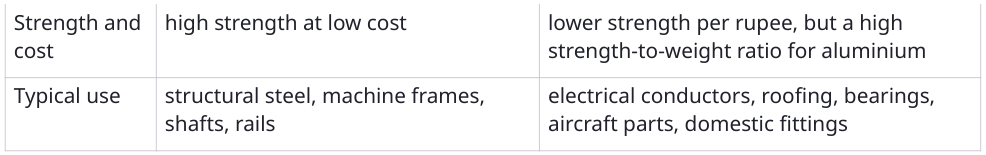
Example: a rail is ferrous (steel) because it needs strength and wear resistance at low cost; an overhead power cable is non-ferrous (aluminium over a steel core) because it needs conductivity and low weight.
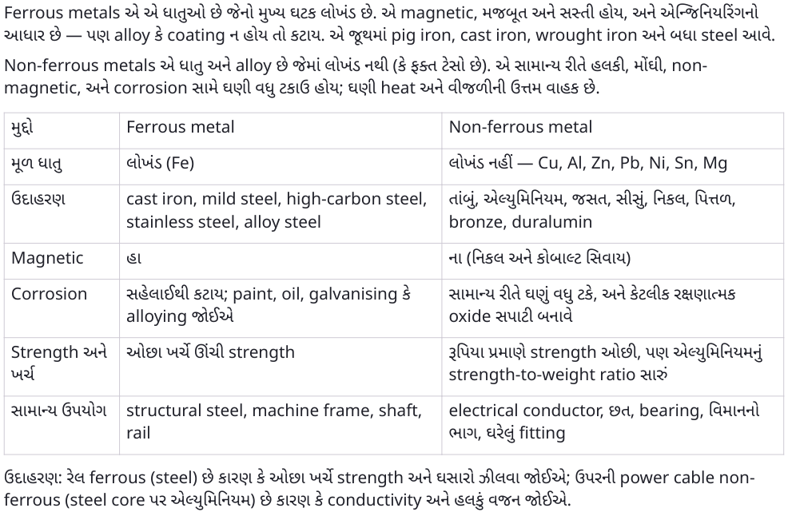
Q.3 (b) · Explain general characteristics of solid state. · 4 marks
In the solid state the particles — atoms, ions or molecules — are held close together by strong forces, so a solid has a definite shape and a definite volume of its own. The general characteristics that follow from this are:
![Q.3 (b): preserved source formula, table or diagram, page 38. Extracted text context (formula notation may be incomplete): Characteristic What it means The reason Definite shape and volume a solid does not take the shape of its container the particles are locked in position, not free to slide High density solids are far denser than their liquids and gases the particles are packed close, with little empty space Very low compressibility a solid cannot be squeezed to any useful extent there is almost no free space between the particles a solid resists shear and carries load the strong inter-particle bonds resist deformation Rigidity and mechanical strength](winter-2025.assets/0076.webp)
![Q.3 (b): preserved source formula, table or diagram, page 39. Extracted text context (formula notation may be incomplete): Diffusion is extremely slow two solids pressed together hardly mix, even in years the particles vibrate about fixed positions and cannot travel Definite melting point a crystalline solid melts at one sharp temperature the lattice breaks down at a single energy, unlike an amorphous solid crystals show long-range order and cleavage planes; glass shows short- range order only the arrangement of the particles, and how the solid was cooled Ordered structure (crystalline) or disordered (amorphous) Anisotropy in a crystal properties differ along different directions the lattice spacing and the atomic density differ with direction](winter-2025.assets/0077.webp)
Fig. 3.1 · In a crystalline solid the particles sit on a fixed repeating lattice, which is the root of every characteristic listed.
Worked example — the particles really are close
Copper has a density of 8960 kg/m3 and an atomic mass of 63.5. Find the number of atoms per m3
and the volume per atom, and compare it with the volume of one atom (radius 0.128 nm).
Given: ρ = 8960 kg/m3 · M = 63.5 kg/kmol · NA = 6.022 × 1026 per kmol · r = 0.128 nm
Sanity check: 74 % is exactly the known packing fraction of an FCC metal, and copper is FCC — so the calculation agrees with the crystal structure, and it explains the high density and the near- incompressibility of the solid.
Limitation
These characteristics describe an ideal solid. A real solid has vacancies, dislocations and grain boundaries, and it is those defects — not the perfect lattice — that decide its strength and its diffusion behaviour.
Q.3 (c) · Explain crystal lattices and unit cell. · 7 marks
Definitions
A crystal lattice is the regular, repeating three-dimensional arrangement of points in space at which the atoms, ions or molecules of a crystal sit. Every lattice point has the same surroundings, and the pattern repeats indefinitely. A lattice is described by its lattice parameters: three edge lengths a, b, c and three interaxial angles α, β, γ.
A unit cell is the smallest portion of the lattice that, repeated in three directions, builds the whole crystal. It is the building block of the crystal, and the whole crystal is the unit cell repeated N times in each direction.
Fig. 3.2 · Simple cubic, BCC and FCC unit cells, with the number of atoms per cell and the packing fraction.
Construction — the unit cell part by part
![Q.3 (c): preserved source formula, table or diagram, page 42. Extracted text context (formula notation may be incomplete): Element of the cell Purpose Three edges a, b, c fix the size of the cell and the spacing of the lattice Three angles α, β, γ fix the shape — a cubic cell has α = β = γ = 90° Corner (lattice) points each corner atom is shared by 8 cells, so it contributes 1/8 Face-centre points each face atom is shared by 2 cells, so it contributes 1/2 Body-centre point wholly inside the cell, so it contributes 1 The basis (atom or ion) the actual atom placed at each lattice point — two lattices with the same points but different bases are different crystals](winter-2025.assets/0086.webp)
Working — how the cell builds the crystal, step and reason
1. Step 1 — Count the atoms that belong to one cell, using the sharing rules. Reason: corner atoms are shared by eight cells, so a simple cubic cell holds 8 × 1/8 = 1 atom, BCC holds 2 and FCC holds 4 — the count fixes the density.
2. Step 2 — Relate the atomic radius to the cell edge. Reason: the atoms touch along a particular
direction, so a is fixed by r — for SC a = 2r, for BCC a = 4r/√3, for FCC a = 2√2 r.
3. Step 3 — Compute the packing fraction from the count and the geometry. Reason: it tells how efficiently the space is filled — 52 % for SC, 68 % for BCC, 74 % for FCC.
4. Step 4 — Repeat the cell along the three axes. Reason: the repetition generates the whole lattice, so a single cell plus the symmetry describes a crystal of any size.
The seven crystal systems
![Q.3 (c): preserved source formula, table or diagram, page 43. Extracted text context (formula notation may be incomplete): System Edge / angle condition Example Cubic a = b = c, α = β = γ = 90° NaCl, copper, diamond Tetragonal a = b ≠ c, all 90° white tin, TiO2 (rutile) Orthorhombic a ≠ b ≠ c, all 90° sulphur, aragonite Hexagonal a = b ≠ c, α = β = 90°, γ = 120° zinc, magnesium, graphite Rhombohedral a = b = c, α = β = γ ≠ 90° calcite, bismuth Monoclinic a ≠ b ≠ c, two angles 90° gypsum, sugar Triclinic a ≠ b ≠ c, no angle 90° K2Cr2O7](winter-2025.assets/0087.webp)
Worked example — the lattice constant of copper
Copper is FCC with an atomic radius of 0.128 nm and an atomic mass of 63.5 kg/kmol. Find the lattice constant a, the number of atoms per cell, and the theoretical density.
Given: FCC · r = 0.128 nm = 1.28 × 10−10 m · M = 63.5 kg/kmol · NA = 6.022 × 1026 per kmol · n = 4 atoms per FCC cell
For FCC: a = 2 √2 r = 2 × 1.414 × 1.28 × 10−10
a = 3.62 × 10−10 m = 0.362 nm
Cell volume V = a3 = (3.62 × 10−10)3 = 4.74 × 10−29 m3
a = 0.362 nm and ρ = 8895 kg/m3, against the handbook value of 8960 kg/m3
Sanity check: the calculated density is within 0.8 % of the measured value, the small difference being the vacancies and the thermal expansion at room temperature — so the unit-cell model is sound.
Importance and limitations
• The unit cell predicts density, the slip systems and therefore the ductility, the diffusion path, and the X-ray diffraction pattern — which is how a lattice is measured.
• But a real crystal is not one perfect cell: it is a mosaic of grains, each with defects, and the properties of the metal depend on those defects more than on the ideal cell.
• Some materials have the same lattice but a different stacking sequence (FCC and HCP both have 74 % packing) and behave quite differently in forming, so the cell alone is not enough — the stacking matters too.
Q.3 (a) · List physical properties and application of cast iron. · OR · 3 marks
Cast iron is an iron–carbon alloy with 2–4 % carbon (and 1–3 % silicon), which is cast rather than rolled. The carbon is mostly present as graphite or as cementite, and which one it is decides the type of iron.
Physical properties
![Q.3 (a) OR: preserved source formula, table or diagram, page 46. Extracted text context (formula notation may be incomplete): Property Value / behaviour Density about 7200 kg/m3 (graphite makes it lighter than steel) Melting range 1150–1250 °C, so it is fluid and fills a mould well Strength tensile 100–400 MPa; compressive strength 3–4 times the tensile strength Hardness 150–250 HB for grey iron, up to 500 HB for white iron Ductility almost nil — elongation below 1 %; it is brittle and cannot be forged or rolled Machinability excellent, because the graphite flakes lubricate the chip Thermal conductivity about 45–55 W/m·K, higher than steel Damping capacity very high — it absorbs vibration Wear resistance good, and white iron is used for the hardest wear surfaces Corrosion rusts, but more slowly than steel; it forms a protective graphitic skin](winter-2025.assets/0092.webp)
Applications
![Q.3 (a) OR: preserved source formula, table or diagram, page 46. Extracted text context (formula notation may be incomplete): Where Why cast iron Machine tool beds, frames, bases it damps vibration, is rigid and is cheap Engine blocks, cylinder liners, brake drums, flywheels it casts to shape, wears well and absorbs heat and vibration Pipes, manhole covers, drainage fittings cheap and corrosion resistant enough for soil Pump bodies, valve bodies, water fittings casts to a complex shape and resists water Fireplace grates, stoves, cooking ranges it will not soften at cooking temperature Rolls and dies for the mill, and wear plates white iron gives a very hard surface](winter-2025.assets/0093.webp)
Example: the bed of a lathe is grey cast iron: it is cast to shape in one piece, it damps the vibration of the cut so the finish is good, and it is far cheaper than a steel fabrication.
One-line limitation: cast iron must never be used in tension or in impact — it gives no warning and breaks suddenly.
Q.3 (b) · Explain electrical properties of solids. · OR · 4 marks
The electrical behaviour of a solid is decided by its band structure. The electrons of the atoms fill bands of allowed energy; a solid conducts only if an electron can move into an empty state just above it. On that basis solids are conductors, semiconductors or insulators.
Fig. 3.3 · Band structure of a conductor, a semiconductor and an insulator — the width of the forbidden gap sets the behaviour.
The properties
![Q.3 (b) OR: preserved source formula, table or diagram, page 48. Extracted text context (formula notation may be incomplete): Property Meaning Values conductor 10−8 Ω·m; semiconductor 10−5–103 Ω·m; insulator 1010–1016 Ω·m the resistance offered to current per unit length and area; σ = 1/ρ Resistivity and conductivity how the resistance changes with temperature positive for a metal (resistance rises), negative for a semiconductor and for carbon Temperature coefficient of resistance Band gap the energy needed to lift an electron into the conduction band 0 for a metal, about 1.1 eV for Si, 5–9 eV for glass and mica how well a solid stands off a voltage without breaking down, and how much charge it stores glass 10–14 kV/mm; mica 20 kV/ mm Dielectric strength and permittivity zirconia conducts O2− above 600 °C — the oxygen sensor Conduction by ions in some solids the current is carried by ions, not electrons Superconductivity below a critical temperature the resistance falls to zero niobium–titanium below 9 K, used in MRI magnets a small addition of a donor or acceptor raises the conductivity by orders of magnitude phosphorus in silicon gives n-type, boron gives p-type Semiconductor and doping light or a mechanical strain changes the electrical behaviour selenium photocell, PZT sensor Photoconductivity and piezoelectricity](winter-2025.assets/0097.webp)
Working — why a metal and a semiconductor behave so differently
1. Step 1 — In a metal the valence band is only partly filled or overlaps the next band. Reason: a field can give an electron a tiny energy and move it, so conduction is easy and the resistivity is very low.
2. Step 2 — In a semiconductor the valence band is full and the gap is about 1 eV. Reason: heat or light can lift a few electrons across, so the conductivity is small but rises sharply with temperature — which is why the coefficient is negative.
3. Step 3 — In an insulator the full valence band is separated by more than 5 eV. Reason: no electron can cross at ordinary temperature, so the solid is an insulator.
4. Step 4 — In a metal the lattice vibrates more as it heats, and the electrons collide with the vibrations. Reason: the scattering shortens the mean free path, so the resistance rises with temperature.
Worked example — resistivity and its temperature rise
A copper busbar has a resistivity of 1.7 × 10−8 Ω·m at 20 °C and a temperature coefficient of 0.0039 per °C. It carries 500 A and is 3 m long with a 50 mm × 10 mm section. Find the resistance, the voltage drop and the resistance at 80 °C.
Given: ρ = 1.7 × 10−8 Ω·m · L = 3 m · A = 50 × 10 = 500 mm2 = 5 × 10−4 m2 · I = 500 A · α = 0.0039 per °C · ΔT = 60 °C
Voltage drop V = I R = 500 × 1.02 × 10−4 = 0.051 V
R at 80 °C = R20 (1 + α ΔT) = 1.02 × 10−4 × (1 + 0.0039 × 60)
= 1.02 × 10−4 × 1.234
R = 0.102 mΩ, drop = 51 mV, and R rises to 0.126 mΩ at 80 °C — a 23 % rise
Sanity check: a 51 mV drop at 500 A is 25 W of loss in 3 m of busbar, which is small but real — and the 23 % rise with 60 °C explains why a busbar is rated at a stated ambient temperature.
Limitations and importance
The band picture is a model: it does not by itself give the resistivity, which also depends on the defects, the grain boundaries and the impurities, and that is why two samples of the same metal can differ. In practice the property is what decides the choice — copper for a conductor, porcelain or epoxy for an insulator, silicon for a device and zirconia for a sensor at 700 °C.
Q.3 (c) · Explain amorphous and crystalline solids. · OR · 7 marks
Definitions
A crystalline solid is one in which the atoms, ions or molecules are arranged in a regular, repeating three-dimensional pattern that extends over a long range. A crystal therefore has long-range order, a sharp melting point, and flat cleavage planes.
An amorphous solid (or non-crystalline, glassy solid) is one in which the particles are frozen in a disordered arrangement, with order only over a few atomic distances. It has short-range order, no sharp melting point, and it breaks with a conchoidal, glassy fracture.

Fig. 3.4 · Ordered lattice in a crystalline solid against the random arrangement in an amorphous solid.
Construction — what the structure is made of
![Q.3 (c) OR: preserved source formula, table or diagram, page 52. Extracted text context (formula notation may be incomplete): Feature Crystalline Amorphous Particle arrangement a regular lattice, repeating in all three directions random, like a frozen liquid Range of order long-range, micrometres across short-range, only a few atom spacings Cooling from the melt the atoms take their lattice positions at the freezing point the melt stiffens before it can order — the viscosity rises above 1012 Pa·s Typical examples NaCl, quartz, sugar, metals, diamond glass, rubber, plastics, amorphous silica, wax](winter-2025.assets/0103.webp)
Comparison — property by property
Property Crystalline solid Amorphous solid
Melting sharp melting point — ice at 0 °C, iron at 1538 °C
softens gradually over a temperature range; glass has no melting point, only a softening range
Cleavage breaks along definite crystallographic planes
breaks with a curved, conchoidal fracture like glass
X-ray diffraction
sharp, well defined spots and lines
broad diffuse halos
Density and packing
dense and closely packed — up to 74 %
looser packing, so usually a little less dense than the crystalline form of the same material
![Q.3 (c) OR: preserved source formula, table or diagram, page 53. Extracted text context (formula notation may be incomplete): Optical behaviour usually anisotropic; a crystal can be birefringent isotropic — the same in all directions Mechanical behaviour anisotropic; a crystal cleaves and slips on definite planes isotropic and brittle; glass has no slip plane, so it shatters Thermal behaviour a definite latent heat of fusion at the melting point no sharp latent heat; the specific heat changes gradually On heating melts at one temperature and then flows softens, and a thermosetting glass or polymer may set hard before it can flow Stability thermodynamically stable form of the solid metastable — glass may slowly devitrify over years](winter-2025.assets/0104.webp)
Working — why the difference exists, step and reason
1. Step 1 — A melt cooled slowly gives the atoms time to find their lattice positions. Reason: diffusion is fast at a high temperature, so the ordered, low-energy crystal forms and the solid is crystalline.
2. Step 2 — A melt cooled fast does not give that time. Reason: the viscosity rises so quickly that the atoms are frozen where they are, and the disorder of the liquid is retained — the solid is amorphous.
3. Step 3 — Because a crystal has a periodic lattice, all its bonds break at one energy. Reason: that is why the melting point is sharp, and why the X-ray pattern has sharp lines.
4. Step 4 — In a glass the bond energies vary from place to place. Reason: so it softens over a range, and an X-ray gives a broad halo instead of lines.
Worked example — the density of the two forms of silica
Crystalline quartz has a density of 2650 kg/m3. Silica glass has a density of 2200 kg/m3. Find the percentage of the volume that is free space in each, taking the true density of silica as 2650 kg/m3
for quartz, and explain the difference.
Given: ρquartz = 2650 kg/m3 · ρglass = 2200 kg/m3 · true density of silica = 2650 kg/m3
Free space in glass = 1 − 0.83 = 0.17
Silica glass has about 17 % more free volume than quartz, which is why it is 17 % less dense
Sanity check: the disordered packing of glass cannot fill space as efficiently as a lattice, so a lower density is expected; 17 % is consistent with the difference in packing between a random and an ordered arrangement of the same tetrahedra.
Importance and limitations
• The difference is used, not just described: a crystal is chosen where strength, a sharp melting point or anisotropy is wanted (a turbine blade, a semiconductor wafer), and a glass where isotropy, transparency and easy forming matter (a window, a bottle, an optical fibre).
• Amorphous metals (metallic glasses) are a modern exception: cooled at 106 K/s, they are stronger and much more corrosion resistant than the same alloy in crystalline form.
• A glass is metastable: it can devitrify — crystallise slowly — and that is a real failure mode of a glass-ceramic seal at high temperature.
• A crystal is not perfect either: vacancies, dislocations and grain boundaries mean that the real strength is 10–100 times below the theoretical strength of a perfect lattice.
Question 4
Q4 · Forging, material testing, visual inspection, monel, DPT and hydrostatic testing
Q.4 (a) · Explain forging. · 3 marks
Forging is a metal forming process in which the metal is heated to a hot working temperature and shaped by compressive force — by hammer blows (drop forging) or by a slow squeeze (press forging). The metal flows plastically into the required shape, and the working closes the internal porosity and refines the grain.

Fig. 4.1 · Rolling is continuous and gives a long product; forging is discrete and shapes one part at a time.
Types
Type How it works Use
the hot billet is hammered between flat dies, and the operator turns it
a large shaft, a ship's anchor, a one-off part
Open-die (smith) forging
the dies carry the shape, and the metal fills the impression
connecting rods, crankshafts, gear blanks, spanners
Impression (closed- die) forging
Drop forging a heavy hammer falls on the die; a rapid blow
high production of a medium part
Properties it gives, and the reason
• Strength is higher than in a casting of the same steel, because the working closes the shrinkage porosity and welds the internal voids.
• Toughness and fatigue life are better, because the grain is refined and the fibre flow follows the shape of the part, so the grain does not run across a corner.
• Weight saving, because a forged part can be made with the metal exactly where the load is, and a casting needs a thicker section to be sound.
• But it needs expensive dies and a large press, and it is economical only in quantity; a thin section or a very intricate shape is better cast.
Worked example — forging force
A billet of 0.02 m2 cross section is forged at 1100 °C where the flow stress is 120 MPa. Find the force needed for an open-die squeeze (neglecting friction), and the press capacity for a factor of 1.5.
Given: A = 0.02 m2 · σf = 120 MPa = 120 × 106 N/m2 · FOS = 1.5
Force F = σf · A = 120 × 106 × 0.02
F = 2.4 × 106 N = 2.4 MN
Press capacity = 1.5 × 2.4 = 3.6 MN
Forging force 2.4 MN, so a press of at least 3.6 MN (about 360 tonne) is needed
Sanity check: 360 tonne is a typical forging press size for a part of this section, so the answer is realistic. Forging with a fuller die would need 1.15–1.5 times more because of friction and the constraint of the die shape.
Limitation
Forging gives only a rough shape: a machining allowance must be left, and a thin web or a sharp rib cannot be forged at all. A forging is also anisotropic — strongest along the fibre flow — so the designer must know the grain direction.
Q.4 (b) · Describe importance of material testing. · 4 marks
Material testing is the measurement of the properties of a material — its strength, ductility, hardness, toughness, and its freedom from defects — so that the design can be based on measured numbers rather than on guesswork.
Fig. 4.2 · The two families of tests: destructive tests spoil the sample, non-destructive tests keep the part fit for service.
Why it matters
Reason What testing gives Consequence if it is skipped
Safe design yield strength, ultimate strength and elongation, for the design stress and the factor of safety
a vessel or a structure sized on assumed numbers can fail
Correct selection a comparison of candidate materials on measured properties
the wrong grade is chosen and the part wears or corrodes early
![Q.4 (b): preserved source formula, table or diagram, page 60. Extracted text context (formula notation may be incomplete): a check that the delivered material matches the specification (a mill test certificate is verified by a sample test) a substandard heat of steel enters the plant Quality control of the product hardness after heat treatment, strength after welding, density after casting the heat treatment or the weld is wrong and nobody knows Control of the process the mechanism — fatigue, creep, brittle fracture, corrosion the same failure repeats Failure investigation a test certificate for a pressure part, a lifting tackle or a boiler the plant cannot be insured or commissioned Legal and code requirement property data for a new alloy or a new composite a new material cannot be used with confidence Development of new materials Economy the cheapest material that meets the measured requirement an over-designed, over-cost part](winter-2025.assets/0116.webp)
Working — how a test is used, step and reason
1. Step 1 — Take a sample from the lot, in the direction and from the place the code specifies. Reason: the properties vary through a forging and across a weld, so a sample from the wrong place tells nothing about the part.
2. Step 2 — Prepare the specimen to the standard size and finish. Reason: a rough or an oversize specimen gives a different result, and the standard size is what makes results comparable.
3. Step 3 — Run the test at the specified rate and temperature. Reason: a metal is stronger at a high strain rate and weaker when hot, so the test condition must match the service condition.
4. Step 4 — Compare the result with the specification and record it. Reason: the number is only useful against the acceptance limit; a test without a limit proves nothing.
Worked example — reading a tensile test
A 12.5 mm diameter specimen of steel with a 50 mm gauge length is pulled to failure at 78 kN. It yields at 45 kN and the gauge length at failure is 62 mm. Find the yield strength, the ultimate strength and the percentage elongation, and comment.
Given: d = 12.5 mm = 0.0125 m · L0 = 50 mm · Fy = 45 kN · Fmax = 78 kN · Lf = 62 mm
σy = 367 MPa, σu = 636 MPa, elongation 24 % — a ductile, medium-carbon steel
Sanity check: a 24 % elongation and a σu/σy ratio of 1.7 are typical of a ductile structural steel, and the part would "neck" before breaking — so the material is not brittle and the test result is credible.
Limitation
A test measures a small specimen, not the whole part: it cannot prove that a casting is free from an internal void or that a weld has no crack, which is exactly why the non-destructive tests exist. And a single test at room temperature says nothing about creep at 550 °C or brittle fracture at −20 °C.
Q.4 (c) · Explain importance and tools used for visual Inspection for material. · 7 marks
What visual inspection is
Visual inspection is the examination of a material or a component with the unaided eye, or with a simple aid such as a magnifier, a boroscope or a light, to find surface defects. It is the oldest and the cheapest test, it is always the first test, and no other test replaces it.
Fig. 4.3 · Visual inspection of a butt weld — good light, a clean surface and a magnifier find a surface crack that no gauge would catch.
Importance
![Q.4 (c): preserved source formula, table or diagram, page 63. Extracted text context (formula notation may be incomplete): Reason What it finds It is the first filter a part with an obvious crack, a blowhole or a bad weld is rejected before a costly NDT is spent on it cracks, laps, seams, corrosion pits, and a fatigue crack always starts at a surface It finds the surface defects that matter most in service It is cheap and quick no consumable, no radiation, no skilled operator beyond a trained inspector, so 100 % inspection is practical It records the general condition misalignment, undercut, spatter, poor finish, wrong marking, and a dimension check with a rule it can be done on site, in a pit, on a scaffold, on a hot line It needs no power and no special environment a weld procedure and a pressure vessel both call for a visual examination before and after other NDT It is a legal and a code requirement It supports the other tests the area for a dye-penetrant or an ultrasonic test is chosen from what the eye has already found](winter-2025.assets/0124.webp)
Tools used
![Q.4 (c): preserved source formula, table or diagram, page 64. Extracted text context (formula notation may be incomplete): Boroscope / endoscope with a light inspects the inside of a pipe, a tube or a casting cavity that cannot be opened reaches a bend or a long tube and records the image Flexible fibre-optic and video boroscope Mirror and a light sees round a corner or into a hidden face measures the leg length, the throat, the reinforcement and the undercut Weld gauge (fillet and butt weld gauge) checks the dimension, the gap and the alignment Vernier, micrometer, steel rule, feeler and taper gauge Surface comparator / replica tape judges the surface roughness against a standard the surface must be clean and dry, because scale and paint hide the defect Cleaning tools — wire brush, solvent, emery Camera and a report form records the finding and its location, so that the repair can be traced confirms a crack the eye has suspected — a visual finding often leads straight to an NDT Magnet and a dye-penetrant kit (as an extension)](winter-2025.assets/0126.webp)
Working — the inspection, step and reason
1. Step 1 — Clean the surface — wire brush, solvent, and dry it. Reason: scale, paint, oil and water hide a crack, and a wet surface reflects light into the eye.
2. Step 2 — Light the surface at a low angle rather than straight on. Reason: a raking light casts a shadow in a fine crack or a lap, which makes it visible.
3. Step 3 — Examine systematically — in a grid, or along the weld from toe to toe. Reason: a random scan misses the one defect that matters, and a grid makes the coverage provable.
4. Step 4 — Use the magnifier, the boroscope or the gauge on anything that looks doubtful. Reason: the eye is poor at judging a size, and a weld gauge gives a number that can be compared with the acceptance limit.
5. Step 5 — Record, mark and report every finding. Reason: a defect that is not recorded is not repaired, and the report is the evidence for the next inspection.
Worked example — is the undercut acceptable?
A fillet weld of 8 mm leg length shows an undercut of 0.6 mm along 40 mm of its length. The code allows an undercut of 0.5 mm, or up to 1.0 mm if the length is below 10 % of the weld length. Decide whether the weld is acceptable for a weld length of 500 mm.
Given: leg = 8 mm · undercut = 0.6 mm · undercut length = 40 mm · weld length = 500 mm · allowance 0.5 mm, or 1.0 mm if the length is under 10 %
Is 0.6 mm above the general 0.5 mm limit? Yes
Is 8 % below 10 %? Yes, so the relaxed 1.0 mm limit applies
Is 0.6 mm below 1.0 mm? Yes
The undercut is within the code, so the weld is acceptable — but it must be recorded
Sanity check: 8 % is just inside the 10 % allowance, so the decision is sensitive to the measurement; a re-measure of the undercut length is the prudent step before accepting it.
Limitations
• It finds surface defects only — an internal void, a lack of fusion inside a weld or a mid-wall crack is completely invisible, which is why DPT, MPI, UT and RT exist.
• It depends on the inspector: eyesight, training and fatigue change the result, so a second inspector or a documented procedure is needed.
• It needs access and light: a closed vessel, an insulated pipe or a dark corner cannot be inspected without a boroscope or dismantling.
• A very fine crack, or one filled with dirt or paint, can be missed — and a small indication is easily dismissed as a scratch.
Q.4 (a) · List properties and application of monel metal. · OR · 3 marks
Monel is a nickel–copper alloy with roughly 67 % Ni, 30 % Cu, 1.5 % Fe and small amounts of Mn, Si and C. It is a single-phase solid solution, which is why it is tough, and it is one of the standard alloys for sea water and for hydrofluoric acid service.
![Q.4 (a) OR: preserved source formula, table or diagram, page 67. Extracted text context (formula notation may be incomplete): Property Value / behaviour Composition 67 % Ni, 30 % Cu, 1.5 % Fe, 1 % Mn, small Si and C Strength tensile 480–620 MPa, yield 170–350 MPa; it work-hardens strongly Hardness about 125–250 HB, depending on the temper Ductility elongation 20–35 %, so it can be rolled, drawn and deep-drawn Corrosion resistance excellent in sea water, in neutral and alkaline solutions, in hydrofluoric acid and in sulphuric acid without air High-temperature behaviour usable up to about 500 °C, with good oxidation resistance Electrical and thermal low conductivity compared with copper, so it is not used as a conductor Magnetic non-magnetic (unlike most nickel alloys), which matters for instruments Machinability only fair, because it work-hardens; it needs a slow speed and a heavy feed Cost expensive, because nickel is dear](winter-2025.assets/0131.webp)
Applications
• Sea-water piping, pump shafts, valve trim, condenser tubes and marine propeller shafts.
• Chemical plant for hydrofluoric acid and for sulphuric acid, where no other common alloy
survives.
• Petroleum refining equipment, and sour-gas and brine handling.
• Domestic and food equipment: a good-quality sink, a cooking pan, a milk-line fitting.
• Instrument parts and springs that must be non-magnetic and corrosion resistant.
Example: a sea-water cooling line on a ship uses monel tube because copper–nickel and monel both resist sea water, but monel also resists the velocity and the erosion–corrosion at the tube inlet.
Limitation: monel is expensive and its machinability is poor because it work-hardens — so it is used only where a cheaper stainless steel or cupronickel will not survive.
Q.4 (b) · Describe dye penetration testing. · OR · 4 marks
Principle
Dye penetrant testing (DPT), also called liquid penetrant inspection, is a non-destructive test that finds surface-breaking defects in a non-porous material. A coloured or fluorescent liquid is applied and it seeps into a crack by capillary action; the excess is cleaned off and a developer draws the
trapped liquid back out, so the crack shows as a bright line.

Fig. 4.4 · The five steps of DPT — clean, penetrate, remove the excess, develop, and inspect.
Working — step and reason
1. Step 1 · Pre-clean — The surface is cleaned of oil, scale, paint and water and then dried. Reason: the penetrant can only enter a crack that is open and clean, and any dirt blocks the entry.
2. Step 2 · Apply the penetrant — The part is flooded or dipped and left for a dwell time of 5–30 minutes. Reason: the liquid needs time to be drawn into a fine crack by capillary pressure, and a fine crack takes longer.
3. Step 3 · Remove the excess — The surface penetrant is wiped and washed off. Reason: only the liquid inside the defect should remain, or the whole surface would glow and hide the indication.
4. Step 4 · Apply the developer — A thin white powder layer is sprayed on and left to dry. Reason: the powder draws the trapped penetrant out by absorption and gives a contrasting white background.
5. Step 5 · Inspect and record — The part is examined under white light, or under UV for a fluorescent penetrant. Reason: a coloured indication stands out against the white developer, and the size is judged against the acceptance standard.
Methods and their properties
Method Penetrant Advantage Limitation
Colour contrast (visible dye)
red dye in a solvent no UV lamp needed; works in daylight
less sensitive than fluorescent
![Q.4 (b) OR: preserved source formula, table or diagram, page 70. Extracted text context (formula notation may be incomplete): Fluorescent fluorescent dye the most sensitive; a fine crack glows brightly under UV needs a dark room and a UV lamp Water-washable penetrant with an emulsifier in it quick, one step to wash easy to over-wash and lose the indication Post-emulsifiable separate emulsifier most sensitive water-wash method, good for a rough surface one extra step Solvent- removable penetrant wiped with solvent portable, used on site for a weld less repeatable](winter-2025.assets/0134.webp)
Worked example — how deep the penetrant must be
The capillary rise in a crack of width 2w = 2 µm can be estimated from h = 2γ cos θ/(ρ g w). Take γ = 0.030 N/m, θ = 0°, ρ = 900 kg/m3 and w = 1 µm. Find the rise and the time for it to be useful.
Given: γ = 0.030 N/m · θ = 0° so cos θ = 1 · ρ = 900 kg/m3 · w = 1 × 10−6 m · g = 9.81 m/s2
The capillary rise is far more than the wall thickness (6.8 m against a few mm), so the penetrant fills the crack quickly — the dwell time is set by viscosity, not by height
Sanity check: a rise of metres in a micron-wide crack means gravity is negligible, so a 5–30 minute dwell is governed by the viscosity and by the fact that the crack may be only partly open — consistent with the standard practice.
Limitations
• It finds surface-breaking defects only — an internal void or a crack below a weld cap is invisible, so DPT complements rather than replaces UT or RT.
• The surface must be smooth and non-porous; a rough casting or a porous weld gives a background of false indications.
• It cannot be used on a painted or plated part, and it must be done before the coating.
• The penetrant and the developer are a health and a fire hazard, and the residues must be cleaned off afterwards — especially on a stainless steel that will be welded or on a titanium part, where a chloride residue causes later cracking.
Q.4 (c) · Explain hydrostatic testing and pneumatic testing. · OR · 7 marks
What the two tests are for
A newly built or a repaired pressure vessel, a pipeline or a boiler must be proved sound and tight before it is put into service. Two tests do this: a hydrostatic test, in which the vessel is filled with water and pressurised, and a pneumatic test, in which it is filled with air or nitrogen and pressurised.
Fig. 4.5 · Hydrostatic test — the vessel is filled with water, a test pump raises the pressure, and a gauge and a relief valve protect the test.
Hydrostatic test
![Q.4 (c) OR: preserved source formula, table or diagram, page 73. Extracted text context (formula notation may be incomplete): Part of the test Purpose Filling with water (with a vent open) expels all the air, which is the point: water is almost incompressible, so the stored energy is small Test pump and a calibrated gauge raises the pressure steadily to the test pressure and reads it Test pressure usually 1.5 times the design pressure, or as the code requires Holding time 30 minutes at the test pressure, then a check of the gauge and of every joint Relief valve on the test rig protects the vessel against a pump surge or a thermal rise Inspection of all welds and joints a leak shows as a drip or a damp patch; a permanent deformation shows on the gauge](winter-2025.assets/0141.webp)
Working — hydrostatic, step and reason
1. Step 1 — Fill the vessel with water and vent all the air out. Reason: air is compressible, so any air left stores energy that would be released violently if the vessel failed.
2. Step 2 — Pressurise slowly to the test pressure with a hand or a motor pump. Reason: a slow rise lets the metal yield locally and redistribute the stress instead of shocking it.
3. Step 3 — Hold for 30 minutes and inspect every weld and joint. Reason: a leak needs time to appear at a joint, and the hold also shows any creep or permanent set.
4. Step 4 — Reduce the pressure to the design value, inspect again, then drain and dry. Reason: the test is read at a steady, safe pressure, and the water must be out before the vessel is commissioned.
Pneumatic test
![Q.4 (c) OR: preserved source formula, table or diagram, page 74. Extracted text context (formula notation may be incomplete): Point Pneumatic test Why it is used Medium dry air or nitrogen a vessel that cannot be filled with water — a large gas holder, an air receiver on site, a pipeline in a cold climate, a vessel with a refractory lining that water would ruin Test pressure usually 1.1–1.25 times the design pressure, lower than the hydrostatic value air stores far more energy, so the test pressure is reduced very high — a 1 m3 vessel at 10 bar holds the energy of about 1 kg of TNT Stored energy the reason for the strict precautions Method a soap or a leak-detection solution on every joint, a pressure hold, and a check of the gauge a leak shows as a bubble Precautions a barricade, no personnel in line with a joint, remote gauges, and a staged pressure rise a brittle failure of an air-filled vessel is an explosion](winter-2025.assets/0142.webp)
Comparison
![Q.4 (c) OR: preserved source formula, table or diagram, page 74. Extracted text context (formula notation may be incomplete): Point Hydrostatic test Pneumatic test Medium water (with a corrosion inhibitor) air or nitrogen Stored energy low — water is nearly incompressible high — the gas is compressible Test pressure 1.5 × design pressure 1.1–1.25 × design pressure Sensitivity to a leak good — a drip is seen excellent for a small leak if a soap solution is used Safety of the test safe: a failure leaks water dangerous: a failure is an explosion After the test drain and dry; the water must not be left in no drying needed When it is preferred the default for a new pressure vessel only where water cannot be used, with the code permission](winter-2025.assets/0143.webp)
Worked example — the energy stored in the two tests
A vessel of 2 m3 is tested at 15 bar. Estimate the energy released if it fails in a hydrostatic test and in a pneumatic test, taking the bulk modulus of water as 2.2 GPa and treating the air as isothermal.
Given: V = 2 m3 · P = 15 bar = 1.5 × 106 Pa · Kwater = 2.2 × 109 Pa
Air (isothermal): W = P V ln(P2/P1) = 1.5 × 106 × 2 × ln 15
= 3.0 × 106 × 2.71
About 1 kJ with water against 8.1 MJ with air — a ratio of roughly 8000 to 1
Sanity check: 8 MJ is about the energy of 2 kg of TNT, which is exactly why a pneumatic test is barricaded while a hydrostatic test is not — the calculation justifies the rule.
Limitations
• A hydrostatic test leaves water in the vessel: it must be drained and dried, or it causes corrosion; and a vessel that cannot be dried, or one with a refractory lining, cannot be tested this way.
• A hydrostatic test may be impossible in freezing weather, and the water must be treated with an inhibitor for a stainless steel (chlorides cause stress corrosion).
• A pneumatic test is the only option for a gas holder or a large air receiver, but its stored energy makes it a hazardous operation, allowed only with a code permission, a barricade and a staged pressure rise.
• Neither test finds an internal lamination or a small slag inclusion unless it happens to leak — that is the job of UT and RT, so a pressure test is a proof of tightness, not a complete proof of soundness.
Question 5
Q5 · Alloys, brass, copper and aluminium, duralumin, bronze, silver and nickel
Q.5 (a) · Classify alloys. · 3 marks
An alloy is a metallic substance made by melting a base metal together with one or more other elements, so that the product has better properties than the base metal. Alloys are classified in three ways.
Fig. 5.1 · Alloys classified by the base metal and by the phase that forms.
![Q.5 (a): preserved source formula, table or diagram, page 78. Extracted text context (formula notation may be incomplete): Basis Classes Examples ferrous alloys · non-ferrous alloys steel, cast iron, stainless steel / brass, bronze, duralumin, monel By the base metal binary (2) · ternary (3) · quaternary (4 or more) Cu–Zn / Cu–Zn–Sn / Al–Cu–Mg–Mn (duralumin) By the number of elements solid solution · eutectic · brass (substitutional solid solution) / solder (eutectic) / cementite Fe3C (intermetallic) / pearlite (mixture) By the phase formed intermetallic compound · mixture cast alloy · wrought alloy cast iron / mild steel sheet By the method of making](winter-2025.assets/0149.webp)
Example: brass is a non-ferrous, binary, substitutional solid solution alloy of copper and zinc — the zinc atoms simply replace copper atoms in the lattice, which is why brass is tougher than pure copper but still ductile.
Note on the phases: a solid solution is one homogeneous phase and is the most ductile; a eutectic is a fine lamellar mixture of two phases and has the lowest melting point of the system; an intermetallic compound is a definite chemical compound, hard and brittle — cementite in steel is the classic example.
Q.5 (b) · Explain composition and application of brass. · 4 marks
Composition
Brass is an alloy of copper and zinc, with copper between 55 % and 90 %. The zinc makes it stronger and harder than pure copper while keeping it ductile and easy to machine, and the colour changes from red to gold as the zinc rises.
Type Cu Zn Other Character
60 % 40 %
— cheap, strong, workable cold
Commercial / yellow brass (60/40)
![Q.5 (b): preserved source formula, table or diagram, page 80. Extracted text context (formula notation may be incomplete): Alpha brass (70/30, cartridge brass) 70 % 30 % — the most ductile; deep drawn into cartridge cases Admiralty brass 70 % 29 % 1 % Sn resists dezincification in sea water Naval brass 60 % 39 % 1 % Sn for marine forgings and valve stems Muntz metal 60 % 40 % — hot-worked sheet for ship sheathing Free-cutting brass 62 % 36 % 2 % Pb the lead lubricates the chip, so it machines fast Aluminium brass 76 % 22 % 2 % Al condenser tubes; a protective film forms 75–80 % rest Si or P higher strength and corrosion resistance Silicon / phosphor bronze-type brass](winter-2025.assets/0152.webp)
Properties
• Good strength and hardness — tensile 300–500 MPa, harder than copper.
• Excellent ductility and cold workability in the alpha range, so it is rolled and deep drawn easily.
• Very good machinability, especially with 1–2 % lead — free-cutting brass is the standard material for a turned part.
• Corrosion resistance to fresh water and to a marine atmosphere; but it dezincifies in sea water unless it is inhibited with tin, arsenic or antimony.
• High thermal and electrical conductivity — about 28 % of copper's, which is enough for a heat exchanger but not for a conductor.
• Non-magnetic and it does not spark, which is why it is used for a tool in a flammable area.
• It work-hardens, so it must be annealed between cold drawing passes; and it season-cracks in an ammoniacal atmosphere unless it is stress-relieved.
Applications
Application Which brass and why
Plumbing fittings, taps, valves, couplings free-cutting or naval brass — it machines fast, resists water and takes a thread
Cartridge and shell cases, radiator cores 70/30 cartridge brass — it deep-draws without cracking
Condenser and heat-exchanger tubes admiralty or aluminium brass — the tin or aluminium stops dezincification
Ship sheathing, propeller shaft sleeves Muntz metal — it resists sea water and hot works
Decorative hardware, door handles, musical instruments, locks
yellow brass — golden colour, polishes well and casts easily
Electrical terminals, socket pins, switch parts
brass — conductive, machines well and does not corrode in a dry room
Non-sparking tools (chisel, hammer) for an oil store
brass or aluminium bronze — it does not throw a spark
Worked example — the density of a 70/30 brass
A brass contains 70 % copper (ρ = 8960 kg/m3) and 30 % zinc (ρ = 7140 kg/m3) by mass. Estimate its density, and find the mass of a bush of 40 mm outside diameter, 25 mm bore and 30 mm length.
Given: 70 % Cu, ρCu = 8960 · 30 % Zn, ρZn = 7140 · D = 0.040 m · d = 0.025 m · L = 0.030 m
Mass = 8329 × 2.29 × 10−5
Density 8330 kg/m3, mass of the bush ≈ 0.19 kg
Sanity check: 8330 kg/m3 lies between copper (8960) and zinc (7140) and near the handbook 8530 kg/m3 for 70/30 brass, so the mixture rule is reasonable.
Limitation
Brass dezincifies: in sea water or in a chloride environment the zinc is leached out and a porous copper plug is left, which then fails. That is why a marine brass must contain an inhibitor (tin, arsenic or antimony), and why a condenser tube is admiralty or aluminium brass and never plain 60/40.
Q.5 (c) · Explain physical properties and application of copper and aluminum. · 7 marks
Copper
Copper is a reddish, soft, very ductile metal with the second-highest electrical conductivity of any metal (after silver). It is used both as a conductor and as an alloy base, and it is one of the few metals that occurs native in nature.
Physical properties of copper
Property Value Engineering consequence
Colour and appearance
reddish brown, takes a bright polish architectural and decorative use, and a copper roof weathers to a green patina
Density 8960 kg/m3 heavy — 3.3 times that of aluminium
Melting point 1083 °C it is easily melted and cast, but it softens above 200 °C
58 × 106 S/m — 100 % IACS the standard conductor: wires, busbars, windings, printed circuits
Electrical conductivity
Thermal conductivity
about 400 W/m·K the standard heat-exchanger material: condenser and radiator tubes, cooking pans
Strength annealed 200 MPa, work-hardened 400 MPa
it work-hardens strongly, so it can be drawn to a fine wire
Ductility elongation up to 45 %; the finest wire is drawn from it
winding wire, cable, and the deep drawing of a vessel
Corrosion resistance
excellent in fresh water, in the soil and in a marine atmosphere; it forms a protective patina
plumbing, roofing and a marine fitting
Applications of copper
• Electrical — house wiring, cable, motor and transformer windings, busbars, earthing and printed circuit boards; about 60 % of all copper goes into electrical use.
• Heat transfer — condenser and heat-exchanger tubes, solar panels, cooking pans and radiators.
• Plumbing — water and gas pipe, fittings and valves, where it resists corrosion and does not support bacteria.
• Building — roofing, flashing and cladding, which weather to a green patina.
• Alloys — brass, bronze, gunmetal, cupronickel and monel.
• Coinage, artwork and antimicrobial surfaces.
Aluminium
Aluminium is a silvery, light, corrosion-resistant metal. It is the most abundant metal in the earth's crust, but it is extracted by electrolysis, which is why its cost depends on electricity. Its great advantage is its strength-to-weight ratio.
Physical properties of aluminium
Property Value Engineering consequence
Colour and appearance
silvery white, takes a matt or a bright anodised finish
architectural and consumer use
Density 2700 kg/m3 — a third of steel the lightest of the common structural metals: aircraft, transport, portable structures
Melting point 660 °C easy to melt and cast, but its strength falls quickly above 150 °C
Electrical conductivity
about 62 % of copper, by volume
overhead transmission cable (with a steel core for strength), busbar and foil
Thermal conductivity
about 205 W/m·K — half of copper
heat exchangers, cooking foil, engine radiators
Strength pure 70–100 MPa; alloyed and heat treated up to 600 MPa
duralumin and the 7000 series give an aircraft-grade strength
Ductility excellent — foil of 6 µm is rolled
packaging foil, deep-drawn cans
Corrosion resistance excellent: a thin, self-healing oxide film forms at once
it needs no paint in most atmospheres; it is attacked by alkali and by mercury
Reflectivity high for light and heat reflectors, insulation foil, and low-emissivity roofing
Non-magnetic and non-sparking
yes instrument housings and a tool in a flammable area
Applications of aluminium
• Transport — aircraft structure, vehicle body and engine block, railway coach, shipping.
• Electrical — overhead transmission conductor (ACSR), cable sheathing and busbar.
• Packaging — foil, beverage can, aerosol, food tray — where it is light, impermeable and recyclable.
• Building — window and door frame, curtain wall, roofing sheet and cladding.
• Domestic and industrial — cooking utensil, pressure cooker, heat exchanger, furniture.
• Alloys — duralumin, Al–Si casting alloy, Al–Mg for a marine part, Al–Li for an aircraft.
Worked example — the mass saving in a conductor
A busbar must carry 800 A with a voltage drop below 40 mV over 4 m. Compare the mass of a copper bar (ρe = 1.7 × 10−8 Ω·m, density 8960) with an aluminium bar (ρe = 2.8 × 10−8 Ω·m, density 2700), each of 1000 mm2 section.
Given: I = 800 A · L = 4 m · Vmax = 0.040 V · A = 1000 mm2 = 1 × 10−3 m2
Mass of copper at this section = 1 × 10−3 × 4 × 8960 = 35.8 kg
Mass of aluminium at this section = 1 × 10−3 × 4 × 2700 = 10.8 kg
At equal section, aluminium is 70 % lighter (10.8 kg against 35.8 kg), but it needs a 1.65 times larger section to meet the same voltage drop — and even then it is still about half the mass
Sanity check: aluminium carries 62 % of the current of copper for the same section, and it has 30 % of the density, so for equal resistance the mass ratio is 0.30/0.62 = 0.48 — the aluminium bar is about half the mass, which is why an overhead line is aluminium.
Limitations
• Copper is heavy and expensive, and its price is volatile; it also work-hardens so much that it must be annealed between drawing passes.
• Aluminium has a low melting point and loses strength quickly when hot, so it cannot be used for a hot part; it is difficult to weld, and it cannot be used in contact with alkali or mercury.
• The two together are worse: a copper–aluminium joint in the presence of moisture makes a galvanic couple, and the aluminium is corroded away — which is why a bimetallic joint must use a transition plate.
Q.5 (a) · List composition and properties of duralumin. · OR · 3 marks
Composition
Duralumin is a heat-treatable aluminium alloy of the Al–Cu–Mg family, and it was the first high- strength aluminium alloy, developed for airship and aircraft structures.
![Q.5 (a) OR: preserved source formula, table or diagram, page 88. Extracted text context (formula notation may be incomplete): Element Content Job Aluminium about 94 % the base metal — light and corrosion resistant Copper 3.5–4.5 % the main strengthener; it forms the precipitates on ageing Magnesium 0.4–1.4 % adds strength and helps the precipitation Manganese 0.4–1.0 % improves corrosion resistance and limits grain growth Silicon up to 0.7 % (impurity) kept low, because it forms coarse brittle particles Iron up to 0.7 % (impurity) kept low for the same reason](winter-2025.assets/0167.webp)
Properties
Property Value / behaviour
Density 2780 kg/m3 — only 35 % of steel
Strength solution treated and aged: tensile 350–450 MPa, yield 250–300 MPa
Strength-to-weight ratio
as good as a mild steel and better than most, which is the whole reason for its use
Hardness about 100–120 HB in the aged condition
Ductility elongation 10–20 % in the aged condition — enough to form but not to deep draw
Heat treatment it responds to solution treatment at 500 °C, quenching in water, and ageing at room temperature for 4–5 days
Corrosion resistance
poor in the bare condition — it needs cladding (Alclad) or painting, and it is attacked by sea water
Machinability good, but it must be machined in the aged condition
Weldability poor — it loses strength at the weld and cracks; it is riveted or bonded instead
High-temperature limit
about 150 °C; above that it overages and softens
Why the alloying works
Copper and magnesium are soluble in aluminium at 500 °C but almost insoluble at room temperature. Solution treatment dissolves them, quenching traps them in a supersaturated solid solution, and ageing precipitates fine CuAl2 and MgZn2-type particles that block dislocation movement — which is the precipitation hardening that gives the strength.
Applications
• Aircraft skin, rib, spar, former and rivet — the classic airframe material.
• Vehicle body panels, commercial vehicle frame and rail coach.
• Pressure vessel and a light structural member where weight matters.
• A light forging: a connecting rod, a wheel hub, a fastener.
• Not for a marine part or a hot part, and not for a welded structure.
Worked example — the weight saved in an airframe member
A strut must carry 40 kN in tension with a design stress of one-third of the yield strength. Compare the mass of a duralumin strut (σy = 280 MPa, ρ = 2780) with a mild-steel one (σy = 250 MPa, ρ = 7850) of 1.5 m length.
Given: F = 40 × 103 N · FOS = 3 · duralumin σ = 93.3 MPa, ρ = 2780 · steel σ = 83.3 MPa, ρ = 7850 · L = 1.5 m
Duralumin 1.79 kg against steel 5.65 kg — a saving of 68 %
Sanity check: duralumin is slightly stronger than the steel used here and less than half as dense, so a saving of about two-thirds is exactly what the property ratio predicts — and that is why the airframe is duralumin.
Limitations and safety
Duralumin corrodes badly in sea water and in contact with steel, so it is clad with pure aluminium (Alclad) or painted; it cannot be welded; and its strength falls above 150 °C. Its fatigue behaviour is what limits an aircraft structure, which is why the design uses a safe-life or a damage-tolerance approach rather than a simple static factor.
Q.5 (b) · Explain properties and application of bronze. · OR · 4 marks
Bronze is an alloy of copper and tin, usually with 5–12 % tin, and often with small additions of phosphorus, zinc, lead or aluminium. It is the oldest alloy known to man, and it is still the standard bearing and marine material.
Composition of the common bronzes
![Q.5 (b) OR: preserved source formula, table or diagram, page 91. Extracted text context (formula notation may be incomplete): Type Cu Sn Addition Character 90– 95 % 5–10 % 0.1–0.4 % P the standard bearing and spring alloy; the phosphorus deoxidises and adds wear resistance Phosphor bronze Gunmetal 85– 88 % 8–10 % 2–5 % Zn, 1–2 % Pb cast valve, pump body, a marine fitting Bell bronze 78– 80 % 20– 22 % — hard and sonorous — a bell and a cymbal 90 % — 8–10 % Al, with Fe and Ni the strongest bronze, resists sea water and does not spark Aluminium bronze Silicon bronze 95 % — 3 % Si, 1 % Mn corrosion resistant, used for a marine fastener 85 % 8 % 5 % Pb free-cutting bearing bronze Leaded bronze](winter-2025.assets/0173.webp)
Properties
Property Behaviour
Strength tensile 250–400 MPa (phosphor bronze), up to 700 MPa for aluminium bronze
Hardness and wear resistance
good — better than brass, which is why it is a bearing material
Friction and bearing behaviour
a low coefficient of friction and it conforms to the shaft, so it is the standard sleeve bearing and bush
![Q.5 (b) OR: preserved source formula, table or diagram, page 92. Extracted text context (formula notation may be incomplete): Corrosion resistance excellent in sea water, in steam and in a marine atmosphere — better than brass, because it does not dezincify Ductility good, and it can be rolled, drawn and cast easily; it casts very well, with a low shrinkage Electrical and thermal conductivity lower than copper — about 10–15 % IACS, so it is a spring and a bearing material, not a conductor Fatigue and spring properties phosphor bronze is the standard spring material for a diaphragm, a bellows and an electrical contact Non-sparking and non- magnetic yes — a tool for an oil store and a non-magnetic instrument part Machinability good, and the leaded grade is free-cutting Cost expensive, because tin is dear — which is why a bronze is used only where it earns its cost](winter-2025.assets/0174.webp)
Applications
![Q.5 (b) OR: preserved source formula, table or diagram, page 92. Extracted text context (formula notation may be incomplete): Application Which bronze and why Sleeve bearing, bush, thrust washer, worm wheel phosphor or leaded bronze — low friction, conforms to the shaft, and it survives a temporary oil failure Pump body, valve, impeller, a sea- water fitting gunmetal — it casts to shape and resists sea water Ship propeller, a marine fastener, a pump shaft aluminium or silicon bronze — the strongest corrosion resistance in sea water Bell, cymbal, gong and a statue bell bronze — hard and sonorous Spring, diaphragm, bellows and an electrical contact phosphor bronze — good fatigue and spring properties Non-sparking tool, and a part in a magnetic field aluminium bronze — non-sparking and non-magnetic](winter-2025.assets/0175.webp)
Worked example — a bearing pressure check
A phosphor-bronze bush of 60 mm bore and 60 mm length carries a radial load of 18 kN at 300 rpm. Find the bearing pressure and the PV factor, and check them against the usual limits of 15 MPa and 1.8 MPa·m/s for a bronze bush.
Given: d = 0.060 m · L = 0.060 m · W = 18 × 103 N · N = 300 rpm
Projected area = d L = 0.060 × 0.060 = 3.6 × 10−3 m2
PV = 5.0 × 0.94 = 4.7 MPa·m/s
p = 5.0 MPa (within 15 MPa) but PV = 4.7 MPa·m/s, which is far above the 1.8 MPa·m/s limit — the bush would overheat
Sanity check: the pressure alone passes but the PV product fails, which is the normal lesson of a bearing check: heat generation depends on PV, not on p, so a bush must be selected on both. A larger bush (80 mm × 80 mm) would bring PV to about 2.0 MPa·m/s and would still be marginal.
Limitations
• Bronze is expensive because tin is costly, so it is used for a bearing, a bush or a marine fitting and not for a general structural part.
• It has a lower conductivity than copper, so it cannot be used as an electrical conductor.
• Some bronzes (the high-tin and the aluminium grades) are hard and difficult to machine, and a bronze bearing must be run in and must be kept lubricated.
• A bronze in contact with steel in sea water can still set up a galvanic couple — the material is resistant, but the joint design must be right.
Q.5 (c) · Describe physical properties and application of silver and nickel. · OR · 7 marks
Silver
Silver is a white, lustrous, very soft metal and the best electrical and thermal conductor of all metals. It is also the standard against which the reflectivity of a surface is judged. Its use in engineering is limited by its cost and by its softness, but where the best conductivity or the best reflectivity is needed, silver is chosen.
![Q.5 (c) OR: preserved source formula, table or diagram, page 95. Extracted text context (formula notation may be incomplete): Property Value / behaviour Density 10 490 kg/m3 — heavy, denser than copper Melting point 961 °C 63 × 106 S/m — 105 % IACS, the highest of any metal Electrical conductivity Thermal conductivity 429 W/m·K — also the highest of any metal Reflectivity the highest of any metal over the visible spectrum — about 95 % Strength annealed only 140 MPa, hard drawn 300 MPa — soft and weak compared with copper Ductility the most ductile and malleable metal: 1 g can be drawn into 2 km of wire Corrosion and tarnish noble and it resists most chemicals, but it tarnishes black in sulphur compounds and in H2S Antibacterial silver ions kill bacteria, which is why it is used in a medical dressing and a water filter Alloying copper is added (7.5–12.5 %) to make sterling silver and to harden it for a contact and a bearing](winter-2025.assets/0181.webp)
Applications of silver
• Electrical contacts — a relay, a contactor and a circuit breaker: a silver–cadmium oxide or a silver–nickel contact has the lowest contact resistance and does not weld shut.
• Electronic and microwave — a silver-plated conductor, a waveguide and a high-Q cavity, where the surface conductivity matters.
• Brazing filler — a silver solder (a Ag–Cu–Zn alloy) joins a copper pipe and a carbide tool tip at 600–700 °C.
• Mirrors and reflectors — a silvered mirror, a solar reflector.
• Bearing — a silver-lined aircraft bearing, a sterling-silver bush for a high-load application.
• Coinage, jewellery, cutlery and photography — the traditional and the photographic uses; a silver halide is still used in an X-ray film.
Nickel
Nickel is a silvery, hard, tough and magnetic metal with excellent corrosion resistance. It is used in the pure state for a chemical plant and as an alloying element on a huge scale — stainless steel and the superalloys are built on it.
![Q.5 (c) OR: preserved source formula, table or diagram, page 96. Extracted text context (formula notation may be incomplete): Property Value / behaviour Density 8900 kg/m3 Melting point 1455 °C — high, so a nickel alloy keeps its strength when hot about 14 × 106 S/m — 23 % IACS, low for a metal Electrical conductivity Thermal conductivity about 90 W/m·K — low, which is why a nickel alloy is used for a heating element Strength tensile 400–600 MPa, and it keeps much of it at 600 °C Hardness and toughness hard and very tough; it work-hardens strongly Corrosion resistance excellent against alkali, sea water and many acids; it resists oxidation at high temperature Magnetic ferromagnetic up to its Curie point of 358 °C Catalytic it catalyses hydrogenation and steam reforming, which is why a nickel catalyst is used in a hydrogenation plant Alloying the base of stainless steel (8–20 % Ni), monel, inconel, nichrome, nimonic and the coinage alloys Toxicity a nickel salt can cause contact dermatitis, so a nickel release is limited in a jewellery and a skin-contact item](winter-2025.assets/0182.webp)
Applications of nickel
• Alloying element — stainless steel (18/8), monel, inconel, nichrome (a heating element), nimonic (a turbine blade) and maraging steel.
• Chemical and food plant — a nickel-lined vessel and a caustic soda handling line, where the alkali attacks steel.
• Electroplating — a nickel undercoat under chrome on a tap, a bicycle part and a plastic trim; it also gives a hard wearing surface.
• Battery and electronics — the nickel–cadmium and the nickel–metal-hydride cell, a nickel screen and a thermocouple (Ni–Cr/Ni–Al).
• Coinage and a magnet — an Alnico magnet contains nickel, and a cupronickel coin is 25 % Ni.
• Catalyst — a Raney nickel catalyst for hydrogenation in a food and a pharmaceutical plant.
Worked example — a silver contact against a copper one
A contact must carry 200 A, and the contact resistance must stay below 20 µΩ. Compare the resistance of a contact spot of 1 mm2 area if it is copper (ρ = 1.7 × 10−8 Ω·m) and if it is silver (ρ = 1.6 × 10−8 Ω·m), taking the constriction resistance as R = ρ/(2a) with a the equivalent spot radius.
Given: A = 1 mm2 = 1 × 10−6 m2 · ρCu = 1.7 × 10−8 Ω·m · ρAg = 1.6 × 10−8 Ω·m
Radius a = √(A/π) = √(1 × 10−6/3.14) = 5.64 × 10−4 m
Copper 15.1 µΩ against silver 14.2 µΩ — both pass the 20 µΩ limit, but the silver contact runs about 6 % cooler and, more importantly, it does not oxidise
Sanity check: the resistivities differ by only 6 %, so the reason for a silver contact is not its bulk conductivity but its surface: a silver oxide is conductive and a copper oxide is not, so a copper contact heats up and fails while a silver one does not.
Limitations
• Silver is expensive and soft: it wears, it tarnishes black in sulphur, and it must be alloyed or plated for a wearing application.
• Nickel is heavy and its conductivity is poor, so it is an alloy base and a corrosion barrier and not a conductor; its salt causes contact dermatitis.
• Both are strategic and price-volatile metals, and both are recovered from scrap rather than being used once.